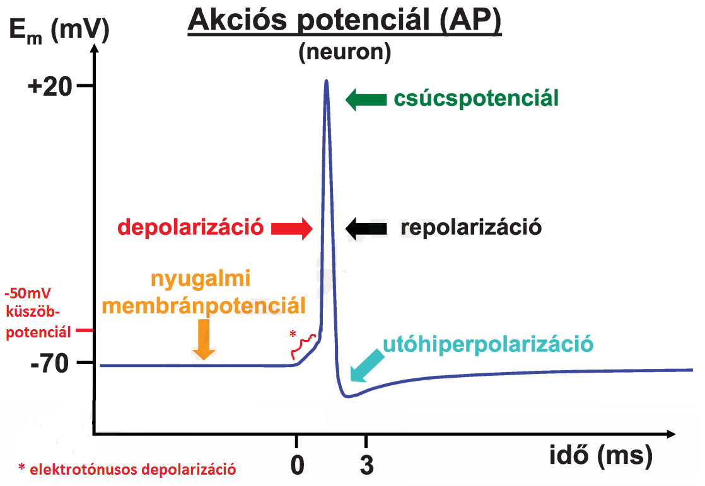
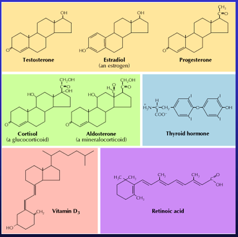

1-es témakör
1. A szervezet vízterei és azok meghatározása. Az extracelluláris és az intravaszkuláris folyadék.
Bevezetés
-
A homeosztázis a belső környezet dinamikus állandóságát jelenti ➜ az élő szervezetek egyik legfontosabb jellemzője ➜ az élettan legfontosabb alapfogalma.
Ebbe tartozik pl. az extracelluláris folyadék pH-jának állandósága.
A szervezet vízterei és azok meghatározása.
- interstitialis folyadék ➜ olyan extracelluláris folyadék, mely extravaszkuláris (tehát ereken kívüli)
- vérplazma ➜ olyan extracelluláris folyadék, mely intravaszkuláris (tehát ereken belüli)
| össz-víztér = 0,6 * testtömeg (pl. 42kg) | ||
| extracelluláris folyadék = 0,2 * testtömeg (14kg) | intracelluláris folyadék = 0,4 * testtömeg (28kg) | |
| interstitialis folyadék = 3/4 * ECF (10,5kg) | vérplazma = 1/4 * ECF (3,5kg) | |

A szervezet vízterei és azok meghatározása.
- higítási elv alapján történik
- ennek lényege: ismert mennyiségű indikátort bejuttatása ➜ megvárjuk míg egyenletesen eloszlik ➜ utána a koncentrációját meghatározva már kiszámítható !!
- megoszlási hányados = (indikátor mennyisége) / (indikátor koncentrációja)
- az indikátor vénán kerül bejuttatásra
- feltétele ➜ indikátor át kell jutnia sejtmembrán + kapillárisfal is
- ilyen pl. deutériummal jelzett víz, tritiummal jelzett víz
- feltétele ➜ indikátor NEM juthat át a kapilláris falán
- mivel a kapilláris falán a fehérjék (pl. plazmafehérjék) nem mennek át, így célszerű olyat választani, ami fehérjéhez kapcsolódik
- pl. radioaktív (pl.jód-)izotóppal jelzett albumin
- pl. evans-kék nevű festék ➜ fehérjékhez kötődik, így ez se megy ki érpályából
- feltétele ➜ indikátor át kell jusson a kapilláris falán, DE! a sejtmembránon NEM juthat át
- mivel a 'kisebb' szénhidrátok könnyen átjutnak kapillárisfalon, án sejtmembrán számukra átjárhatatlan ezért ilyen indikátor pl. inulin nevű oligoszacharid '
- intracelluláris folyadék = össz-víztér - extracelluláris folyadék
- extracelluláris folyadék = extracelluláris folyadék - vérplazma
mennyiségek meghatározásának elve?
össz-víztér mennyiségének meghatározása?
vérplazma mennyiségének meghatározása?
extracelluláris folyadék mennyiségének meghatározása?
intracelluláris folyadék mennyiségének meghatározása?
közvetlen meghatározása nem lehetséges, hiszen olyan indikátort, ami sejtmembránon csak befele tud menni...
interstitiális folyadék mennyiségének meghatározása?
tehát intracelluláris & interstitialis mennyiséget közvetett úton határozzuk meg
Az extracelluláris és az intravaszkuláris folyadék
- vérplazma / ECF / ICF ionkoncentráció közti összefüggés? ► vérplazma megegyezik lényegében az ECF-el mert a kapilláris-fal átjárható az ionok számára (de a sejtmembrán számára nem!)
- extracelluláris tér esetében is megegyező? ► ez már nem
- vérplazma ➜ 60-80g/l
- intracelluláris tér ➜ sokkal több
- elektroforézis alapján különválaszthatók csoportokba
- albumin az egy konkrét fehérje, ezzel szemben a különböző globulin csoportok, több fehérjét foglalnak magukba (pl. az α1-globulinok nem egy fehérje)
- onkotikus nyomás = kolloid ozmotikus nyomás
- 'definíció' ➜ nagy molekulasúlyú anyagok [fehérjék] ozmotikus nyomása
- az összes fehérje részt vesz benne, de leginkább az albumin 'biztosítja' ➜ ugyanis
- ugyan kicsi a molekulatömege
- de még így is ez teszi ki durván a plazmafehérjék felét g/l-ben ➜ részecskeszámban még nagyobb arányban ez teszi ki
- vérzéscsillapítás (pl. fibrinogén')
- ellenanyagok = immunglobulinok ➜ ezek a globulinok
- pufferek
- alapvetően acidikusak ➜ protont kötnek meg (később meg elengedhetik)
- különböző transzport-folyamatokban vesznek részt
- tápanyagok (lipoproteinek)
- oxigén & szén-dioxid
- ionok (vas,réz)
ionkoncentrációk
| ECF | ICF | ||
|---|---|---|---|
| konc | mmol/l | ||
| Na+ | 142 | 12 | |
| K+ | 4 | 150 | |
| Ca2+ | 1,25 (2,5) | 0,0001 (2,5) | |
| Mg2+ | 1 | (30) | |
| H+ | pH=7,4 | pH=7,1 | |
| Cl- | 105 | 5 | |
| HCO3- | 25 | 10-15 | |
| HPO42- + H2PO4- | 1 | +++ | |
vérplazma ➜ glükóz & karbamid koncentráció?
| glükóz | 5mmol/l |
| urea = karbamid | 5,5mmol/l |
fehérjék
koncentráció ➜ vérplazma & intracelluláris tér?
plazmafehérjék ➜ felsorolás? funkciójuk?

felsorolni tudjam őket, + lennt leírt funkciók (amiről volt előadáson szó, azt leírtam!')
funkcióik
ennek a kapilláris-falon keresztül történő transzportban van fontos szerepe (lásd később)
ebbe is, - az onkotikus nyomáshoz hasonlóan - az összes fehérje részt vesz
hematokrit mi?
- hematokrit = (vér alakos elemei térfogata) / (vér össztérfogat) = 44%
➜ tehát az intravascularis folyadék 44%-a intercelluláris, és 56% extracelluláris(=vérplazma)
vvt átmérő?
- 8µm '
pH mi?
- -log[H+] ➜ pl. ha 10-7,2mol/l, akkor a pH 7,2
2. A sejtmembrán szerkezete, permeabilitása, transzport funkciói.
ozmózis
- ozmolalitás ➜ 1kg oldószerben feloldott részecskeszám mólban
- ozmolaritás ➜ 1l oldószerben feloldott részecskeszám mólban
- a kettő megegyezik, amennyiben a részecske nem disszociál (n=1) ➜ pl. ha glükóz 0,1M akkor 0,1Osm/l
- azonban ha disszociál (n>1), akkor eltér ➜ pl. ha NaCl 0,1M akkor 0,2Osm/l
- 290mOsm/kg
- ugyanennyi (hisz ellenkező esetben a víz átáramolna és kiegyenlítené)
- van egy szemipermeábilis membrán (víz számára átjárható, oldott anyag számára nem), két oldalán eltérő ozmolaritású oldott anyag
- az alacsonyabb ozmolaritású oldal felől megindul a víz a magasabb irányába
- addig tart amíg a kialakult hidrosztatikai nyomás' meg nem egyezik az ozmózisnyomással
- π = T * R * n * c (➜van't Hoff törvény)
(anno levezetése kémián csak zárójelbe, nem kell tudni, de talán segít megjegyezni)
- 0,9v% (0,009g/ml)
- ha két oldat ozmolalitása megegyezik, akkor izozmotikusak
- de úgy is felírható, hogy ha két oldat fagyáspontcsökkenése megegyezik, akkor izozmotikusak ➜ ugyanis... Annak a vizes oldatnak a fagyáspontja, amelynek ozmotikus koncentrációja 1 Osm/kg, H2O = –1,86°C. Az oldat ozmolalitását többnyire az oldat fagyáspontcsökkenése alapján mérjük. Az azonos fagyáspontcsökkenésű oldatok izozmotikus oldatok.
- hipozmotikus az az oldat, mely ozmolalitása a másik oldatéhoz képest kisebb
- hiperozmotikus az az oldat, mely ozmolalitása a másik oldatéhoz képest nagyobb
- izotóniás oldat, melybe a sejtet belehelyezve a sejt térfogata nem változik '
- hipotóniás az az oldat, melybe a sejtet belehelyezve a sejt térfogata nő
- hipertóniás az az oldat, melybe a sejtet belehelyezve a sejt térfogata csökken
- nem feltétlen, ugyanis a részecskék sejtmembránon való átjutása is számít izotóniás esetében
- jele σ
- σ értéke 1 és 0 között változhat
- 1 ➜ membrán az oldott anyagot egyáltalán nem engedi át
- 0 ➜ membrán az oldott anyagot teljesen átengedi
- így az ozmózisnyomás képlete (ami már beleveszi membránon való átjárhatóságot is)
- π = σ * π'régi'
- effektív az anyag, mely NEM jut át membránon ➜ σ=1
- ineffektív az anyag, mely átjut a membránon ➜ σ<1
- effektív
- ozmózisnyomás
- NEM a teljes ozmózisnyomás, hanem annak csupán egy részét kitevő onkotikus nyomás
- kapilláris-fal átjárható kis molekulaméretű(súlyú) anyagokra ➜ ionok, glükóz, diszacharidok
- kapilláris-fal átjárhatatlan nagy molekulaméretű(súlyú) anyagokra ➜ fehérjék
- tehát egyedül a fehérjék effektívek ➜ ezért fontos az onkotikus_nyomás fogalma
- ugyanis itt a hajtóerő NEM a teljes ozmózisnyomás, hanem annak csupán egy részét kitevő onkotikus nyomás
ozmolalitás & ozmolaritás mi?
melyik pontosabb és miért?
ozmolalitás, ugyanis az ozmolaritás változhat hőmérséklet hatására (mert nő/csökken az oldószer térfogata)
JR ozmolaritás és molaritás közti összefüggés?
ozmolaritás = molaritás * értékűség(n)
vérplazma ozmolalitása kb mennyi?
hiszen NaCl 0,9v% (0,009g/ml) ➜ átszámolva kijön, hogy c ~= 155mM ➜ 0,31 Osm/l a fiziológiás (n=2) '
sejtek ozmolalitása kb mennyi?
JR ozmózis jelensége, ozmózisnyomás
ozmózisnyomás ➜ oldatra kifejtett nyomás, mely felfüggeszti az ozmózist azáltal, hogy dinamikus_egyensúly áll be

ozmózisnyomás képlete?

izozmotikus NaCl = fiziológiás sóoldat koncentrációja?
izozmotikus oldat?
hipozmotikus & hiperozmotikus oldat?
izotóniás?
hipotóniás & hipertóniás oldat?
izozmotikus egyben izotóniás?
pl.1 izozmotikus (290mOsm/kg) szacharóz oldatba téve sejteket nem történik' változás, mert a sejtmembrán számára átjárhatatlan a szacharóz ➜ szacharóz-oldat egyben izotóniás is
pl.2 izozmotikus urea oldatba téve sejteket azonban, az urea-transzporterek bejuttatják az ureát ➜ csökken az extracelluláris folyadék ozmolalitása, amit egyből kompenzál azzal, hogy víz is elkezd beáramlani a sejtbe, így visszaáll ➜ hipotóniás oldat
rejekciós_hányados?
§ Ha a kompartmenteket elválasztó membrán nemcsak vízre permeábilis, de részlegesen átjárható valamelyik oldott anyagra is, ezt a rejekciós_hányados jellemzi
effektív vs ineffektív?
vérplazmában lévő részecskék többsége effektív vagy ineffektív?
víztranszportot a sejtmembránon keresztül mi határozza meg?
víztranszportot a kapillárisfalon keresztül mi határozza meg?
magyarázatot lásd kapilláris-fal átjárhatósága
kapilláris-fal ➜ átjárhatósága? következménye?
A sejtmembrán szerkezete, permeabilitása, transzport funkciói.
- két teret elválasztanak (extracelluláris vs intracelluláris)
- mellette közben szabályozott összeköttetést is létesítenek (anyag- & információkicserélődés)
- lipid kettősréteg ➜ poláros részük EC fele néz, apoláros részük a membrán belsejében van
- foszfolipidek (nagyrésze)
- koleszterin
- glikolipidek
- fehérjék (transzmembrán)
- integráns ➜ egyréteg asszociált, transzmembrán
- perifériás (lipidhez, fehérjéhez kötött)
- fehérjék a membránban oldalfele tudnak mozogni(laterális diffúzió), a membránra merőlegesen nem(flip-flop)
- annyi kiegészítő, hogy a lipid-raftok esetében a fehérjék csoportokban mozognak (nem egyesével külön-külön)
JR sejtmembrán funkciója
kettős funkciót látnak el...
felépítés?
mozaik-modell lényege?
lipid-raftoknak magas a koleszterin & szfingolipid tartalmuk
A sejtmembrán szerkezete, permeabilitása, transzport funkciói.
- transzport
- szabályozó molekulák forrásai (pl. prosztaglandinok ')
- felületet biztosítanak bizonyos reakciókhoz (pl. ilyen lesz majd véralvadásnál a vérlemezkék membránfelülete)
- egyszerű_diffúziót 'biztosítják'
- annál jobban engedik át az anyagot, minél kisebb és minél lipid-oldékonyabb
- gázokat (CO2,O2) nagyon jól átengedik (kicsik, apolárosak) ➜ gyorsan kicserélődnek
- kis molekulatömegű anyagokat is még átengedik (már kevésbé jól)
- apoláros ➜ pl. szteroidhormonok
- poláros ➜ pl. víz, glicerin
- ionok már alig jutnak át (ugyan kicsik, de töltésük van) ➜ fehérjék biztosítják majd
- nagyobb méretű poláros anyagok számára már teljesen átjárhatatlan ➜ fehérjék, diszacharidok és annál nagyobb széndhidrátok
- transzport
- receptorok
- enzimek (pl. foszfolipáz-C jelátvitelnél, adenilát-cikláz)
lipidek
funkcióinak felsorolása?
szerepük a transzportban részletesen?
pl. víz esetében már szükség van fehérje transzporterekre (szvsz akvaporinok) az átjutásához '
monoszacharidok számára is már fehérje-transzporterek biztosítják az átjutást igazából; diszacharikdokra pedig még az sincs!
membránfehérjék funkcióinak felsorolása?
A sejtmembrán szerkezete, permeabilitása, transzport funkciói.
- egyszerű_diffúzió ➜ nincs, ezt a 'lipidek biztosítják'
- csatornák ➜ vízcsatorna, ioncsatorna
- facilitált_diffúzió ➜ karrier=transzporter
- elsődleges_aktív_transzport ➜ pumpa
- másodlages_aktív_transzport ➜ transzporter
- egyszerű_diffúzió ➜ koncentráció-grádiens irányában (nagyobbtól-kisebb fele)
- passzív_transzport ➜ koncentráció/elektrokémiai-grádiens irányában (nagyobbtól-kisebb fele)
- aktív_transzport ➜ koncentráció/elektrokémiai-grádiens ellenében (kisebbtől-nagyobb fele)
- egyszerű_diffúzió ➜ koncentráció-grádiens (nagyobbtól kisebb fele)
- facilitált_diffúzió ➜ koncentráció-grádiens / elektrokémiai-grádiens
- aktív_transzport ➜ ATP
- adott anyagra nézve mennyi a membrán permeabilitása
- adott anyag koncentráció-különbsége a membrán két oldalán ➜ egyenesen arányos
- telítési_kinetika jellemzi ➜ azaz egy bizonyos átvivendő-anyag koncentráció-grádiens esetében már az összes karrier fehérje igénybe van véve, így hiába nő tovább a koncentráció-grádiens, a sebesség nem fog
- 'fehérjét igényel a facilitált
- egyszerű sebessége egyenesen arányos a transzportálódó anyag koncenátráció-grádiensével, míg facilitáltat a telítési_kinetika jellemzi
- facilitált diffúzió gátlószerekkel gátolható
- közel 100%os (nem abszolút, de elég szűk tartományú)
- ebből az következik, hogy kompetitív' gátlása lehetséges ➜ pl. a vvt-k a glükózt a GLUT-1 nevű karrierrel veszik fel
- ha van mellette mannóz is, akkor mindkettő csökkenti a másik transzportját, mivel vetélkednek a karrier szubsztrátkötő helyéért
- ha van mellette maltóz, akkor az ugyanúgy hozzákapcsolódik a karrierrhez, azonban maga a transzport nem megy végbe, tehát hozzákapcsolódva ott marad és gátolja a glükóz-transzportot
- uniport ➜ 1félét juttat át
- kotranszport ➜ többfélét juttat át
- szimport ➜ azonos irányba
- antiport ➜ ellentétes irányba
- uniporterek közül 2 félét tanulunk
- glükózt átjuttató (GLUT1-7)
- aminosavakat átjuttató
- szimporterek
- Na+ & glükóz (erről biztos tanulunk majd)
- (illetve továbbiak a képen)

- antiporterekre pl. Na+/H+
- elektroneutrális ➜ nincs nettó töltésáramlás a membránon keresztül ➜ pl. GLUT-1 glükóz transzportja, vagy az H+/Na+ antiport
- elektrogén ➜ van nettó töltésáramlás a membránon keresztül ➜ pl. Na+ + glükóz szimporter
- glükózt transzportálnak
- 7 típusuk van (GLUT 1-7)
- pl. GLUT-1 vvt membránján juttatják át a glükózt
- pl. GLUT-4 szabályozott inzulin által ➜ inzulin a sejtben jelátviteli folyamatot vált ki, aminek hatására a GLUT-4 tartalmú vezikulák kijutnak a sejtből a membránba, így a sejt képes lesz glükózt felvenni (lásd még endocitózis & exocitózis résznél)
- vvt-kben van főként (de máshol is lesz róla szó) ➜ ez teszi lehetővé ' a szén-dioxid elszállítását (lásd később)
- ATP megkötése okoz konformációváltozást
- az ATP hidrolízise fedezi az energiát a koncentráció/elektrokémiai-grádiens ellenében történő átjuttatást
- P típusú ➜ ATP-hasítás során foszforilálódik a fehérje
- Na+-K+ pumpa
- Ca2+ pumpa
- (K+/H+ pumpa)
- V típusú ➜ H+ pumpák
- (F típusú ➜ ATP-szintáz)
- ABC szupercsalád
- 3Na+-t sejtből kipumpálja / 2K+-t bepumpálja sejtbe
- közben 1ATP-t hasít
- ez biztosítja az ECF/ICF nagyban eltérő Na+ és K+ koncentrációját

- P-típusú pumpa
- működése gátolható ouabain hozzáadásával
- egyik típusa a sejtmembránban van, és citoszolból kifele pumpálja a Ca2+-t
- másik típusa a sejten belül az ER membránban van, és citoszolból ER lumenébe pumpálja a Ca2+-t
- gyomorsósav szekrécióban játszik szerepet
- (fedősejtek membránjában van ➜ protont pumpál gyomor lumenébe, közbe K+ enged be)
- pl. lizoszómákban vannak, és a citoszolból a vakuolóm belsejébe pumpálja a H+ (lásd msb.1)
- ATP binding casette (ATP-kötő) rész van bennük (nevük eredete)
- legtöbb ABC-transzporter pumpa, de van amelyik csatorna (pl. CFTR)
- közülök a legismertebb a CFTR ➜ Cl- transzportot tesz lehetővé
- fontos szerepe van a folyadékok szekréciójában (pl. hasnyálmirigy nyák)
- cisztikus-fibrózis ➜ ha ez nem működik (genetikai mutáció), akkor nyák besűrűsödik (általában fiatalon halál)
- másik legismertebb MDR-transporterek
- alapvető funkciójuk ➜ védik a sejteket a toxikus anyagoktól (nagy apoláros molekulák), azáltal hogy kipumpálják magukból őket
- probléma ➜ ráksejtek ezek szintézisével rezisztenssé válnak a kemoterápiára
- bélhámsejt glükóz felvétele (lásd transzepiteliális transzport)
| transzport | ||||
|---|---|---|---|---|
| passzív | aktív | |||
| egyszerű_diffúzió | csatornák | facilitált_diffúzió | elsődleges | másodlagos |
transzport-fehérje? !!§ transzportban szereplő membránfehérjék még a gap_junctionok
| ||||
nagyobb / kisebb koncentrációjú térbe megy a szállítandó? | ||||
hajtóereje? | ||||
diffúzió sebessége ➜ egyszerű & facilitált?
-
egyszerű ➜ alábbiaktól függ:
tehát ha egyik oldalon 2M másikon 0M (Δ=2), az kétszer annyi, mintha egyik oldalon 4M, másikon 3M (Δ=1)
(ugyanis)

különbségek' a facilitált és egyszerű diffúzió között?(3)
facilitált_diffúzió specifitása és következménye?
pl. GLUT-1-nevű transzporter csak D-glükózt enged át, L-glükózt nem ➜ de emelett még kis mennyiségben a mannózt is átengedi
transzporterek csoportosítása 'molekulaszállítás-alapján'?
transzportok csoportosítása 'elektromos-szempont alapján'?
GLUT-transzporterek ➜ funkció? típusaik? 2pl?
Cl-/HCO3- karrier?
primer pumpák = ATPáz-ok
működésük lényege?
csoportosításuk?
'legjelentősebb' pumpa?
 Na+-K+
Na+-K+
Ca2+ pumpa típusai?
➜ citoszolban rendkívül alacsony a [Ca2+] (0,0001 mmol/l)
K+/H+ pumpa jelentősége?
V típusú pumpák működésének lényege?
ABC szupercsalád? '
másodlagosan aktív transzport ➜ bemutatása 1pl-n
transzepiteliális transzport
- Az emberi szervezetet mintegy 200 különböző típusú sejt építi fel. Ezek közül egyes típusokban a plazmamembrán az egész sejtben homogén felépítésű és funkciójú; ezek a nem orientált vagy nem polarizált (szimmetrikus) sejtek. Ehhez a sejttípushoz tartoznak pl. a vérsejtek. Más sejttípusok azonban aszimmetrikusak: az orientált vagy polarizált sejtekben a plazmamembrán a sejt két szemben lévő pólusán különbözik, sőt a sejtorganellumok elhelyezkedése is aszimmetrikus. A polarizált sejtekhez tartoznak az alábbiakban ismertetett hámsejtek (epithelsejtek), az endothelium sejtjei, az ependymasejtek és a neuronok. (A neuronok szerkezetét és működéseit a 6. fejezetben írjuk le.)
- epiteliális sejtek (pl. bél lument határolják, vesetubulusokat) esetében asszimmetrikus
- egyik oldalról a külvilág, másik oldalról interstitialis_tér határolja
- tight-junction 'körbefutja a sejtet'
 hermetikusan kettéválasztja
hermetikusan kettéválasztja - felette lévő rész apikális-membrán, alatta lévő rész bazolaterális-membrán ➜ ezek fehérje-összetétele különbözik ➜ pl. bélhámsejteknél Na-K pumpa bazolaterális membránban, SGLT pedig az apikális-membrán van

- ezenkívül biztosítja, hogy eltérű pontenciál van lumen-ben(-20mV) mint EC-ben(0mV)
- tight-junctiont alkotó klaudinok ' alkotják ➜ ezek típusa határozza meg, hogy mennyire átjárható a tight_junction (van amikor víz se jut át pl. vese; de van ahol jobban átjárható)
- bélhámsejt glükóz felvétele
- vese gyűjtőcsatorna
- a sejt bazális oldalában Na-K pumpa van
- 2K+ bepumpál a sejtbe, amit azonban a bazális oldalon lévő K+-csatorna vissza is juttat ➜ K+ csak körforgást végez, nem változik a koncentrációja
- 3Na+ kipumpál interstitiumba ➜ [Na+] csökken a sejtben és nő az interstitiumban
- utóbbit használja fel SGLT nevű szimporter, mely az apikális membránban van ➜ Na+ és glükózt juttat együtt a sejtbe az EC-ből
- ugyanis a glükóz koncentrációja alapvetően nagyobb a sejtben, mint EC...
- ...azonban [Na+] kisebb a setjben, mint EC ➜ így az Na+ beáramlása fedezi az energiáját a glükóz 'koncentrációval-szembeni' transzportjához
- így közvetve lényegében a Na-K pumpa ATP-je fedezte az energiáját az SGLT-nek
- az Na+ sorsa tehát ➜ lumenben csökken a koncentráció, interstitiumban nő
- a glükózt pedig mivel IC-ben magasabb, mint az interstitiális térben ➜ GLUT-2 karrier átjuttatja (facilitált diffúzió) ➜ nettó sorsa ennek is megegyezik Na+-éval
- tehát az eddigiek alapján a következő történik ➜ glükóz + Na+ áramlik lumenből interstitiumba
- ennek a következménye az lenne, hogy a lumen potenciálja csökken, interstituméhoz képest
- így egy minimális mennyiség után nem lenne képes tovább áramlani (elektromos-grádiens már gátolná!)
- így jelen esetben a lumen és interstitium közti potenciál következtében a Cl- fog beáramlani a tight junctionon keresztül ➜ ez ún. paracelluláris Cl--transzport
- 'ezenkívül a sejtbe jutott K+-t visszajuttatja interstitiumba a K+-csatorna
- így az eredő transzport ➜ NaCl + glükóz lumenből interstitiumba be, és az e következtében létrejövő ozmotikus-koncentráció_különbség következtében a víz is ugyanúgy beáramlik lumenből isterstitiumba (tight junctionon keresztül)
- ugyanaz történik, mint bélhámsejt glükóz felvételénél
- a különbség, hogy apikális oldalon Na+-csatorna van, nem Na+-glükóz-szimporter ➜ tehát a glükóz felvétel kimarad
- az eredő áramlás így itt annyi ➜ lumenbről (NaCl + víz) interstitiumba
epithelialis-sejtek felépítése

3 példa, mely bemutatásra kerül majd?
bélhámsejt glükóz felvétele?

'szénhidrátok lebontása glükózzá' lumenben történik ➜ ezután a feladat, hogy a glükózt a bélhámsejt felvegye, és átjuttasa az interstitalis térbe, és ott bejusson a kapillárisokba
§ 'másodlagos aktív transzporterek az alacsony [Na+]-t használják fel, melyet az Na-K pumpa biztosít ➜ lásd kép: itt szimport/antiportnál látható, hogy szinte mindig ott van az Na+, amit arra használnak fel, hogy fedezzék az energiát
lásd kép: itt szimport/antiportnál látható, hogy szinte mindig ott van az Na+, amit arra használnak fel, hogy fedezzék az energiát§ 'így ennél és az összes ion-transzportnál elmondható, hogy ion csak úgy tud érdemleges mennyiségben átáramlani, ha ellenkező töltésű ion is áramlik vele (elektroneutralitás) ➜ hiszen ellenkező esetben, minimális átáramlás után már az elektromos-grádiens gátolná a továbbit'
§ vese proximális tubulus részében -amennyiben nem diabeteses az illető- ugyanezzel a mechanizmussal szívódik vissza a glükóz (lásd később)
vese gyűjtőcsatorna?

transzcelluláris Cl--transzport?
A) másodlagosan aktív klorid-szekréció ➜ jellemzi a nyálmirigyek nyálelválasztását, pancreas nyálelválasztását '
B) másodlagosan aktív klorid-felszívás ➜ jellemzi a vese Henle-kacs része
| különbségek | A | B |
|---|---|---|
| Na+-K+-2Cl- kotranszporter | bazális membránban van | apikális membránban van |
| 'egyből körforgással ioncsatornán vissza' | K+ és Na+ ➜ vissza interstitiumba | K+ ➜ itt luminális oldalon is van |
| Na+ sorsa | paracellulárisan át | transzcellulárisan át |
| Na+ sorsa | paracellulárisan át | transzcellulárisan át |
| CFTR = Cl--csatorna | apikális membránban van | bazális membránban van |
| víz | ugyanúgy paracellulárisan átáramlik a NaCl mellett, mint bélhámsejtnél (ozmózis) ➜ két esetben ellenkező irányba | nincs, mert olyan szoros a hám, hogy tight_junction nem engedi át ➜ hiperozmotikus lesz a belső tér, és hipozmotikus a külső tér |
A) paracelluláris Na+ áramlást a lumenben felgyülemlő Cl- következtében kialakult lumen-interstitium közti potenciál-grádiens váltja ki (lásd hasonlóan bélhámsejtnél)


3. Ioncsatornák osztályozása, működésük fő jellemzői. Feszültségfüggő Ca2+ csatornák.
Ioncsatornák osztályozása, működésük fő jellemzői. Feszültségfüggő Ca2+ csatornák.
- csatornafehérjék főbb típusai ➜ ioncsatornák, akvaporinok(=vízcsatornák)
- több típusuk van
- pl. akvaporin-2 a vesében jelentős (lásd később)
- legtöbb nem szabályozható ➜ tehát szimplán permeábilissá teszik vízre a membránt
- feszültség-függők (A) ➜ membránpotenciál-változásra nyílnak, ilyenek pl. Na+- és K+- és Ca2+-csatornák
- ligand-függők (B,C) ➜ ligand, pl. neurotranszmitter (pl. acetilkolin, glicin, γ-aminovajsav, IP3) hatására nyílnak
- mechanoszenzitív ' (D) ➜ mechanikai hatásra (membránfeszülésre) nyílnak ki
- háttér ➜
- anioncsatornák ➜ Cl-, HCO3-
- kationcsatornák
- szelektív ➜ Na+,K+, Ca2+, H+
- nem szelektív (többféle iont egyszerre)
- monovalens ➜ csak egyértékű ionokat enged át ➜ Na+ & K+
- bivalens ➜ nem csak egyértékű ionokat enged át ➜ Na+ & K+ & Ca2+
akvaporinokról tudnivalók?
akvaporinokról ennyi lenne, továbbiakban a tételben az ioncsatornákról lesz szó
ioncsatornák osztályozása szignál alapján?
zárt állapotban vannak alapvetően ➜ szignál hatására nyílnak, a szignál típusa alapján lehetnek
ioncsatornák osztályozása ion alapján?
Ioncsatornák osztályozása, működésük fő jellemzői. Feszültségfüggő Ca2+ csatornák.
- van egy hidrofil pórus doménje ➜ ezen hatol át az ion
- a pórus egyik fele 'szűk'
- ez biztosítja a specifikusságát (pl. képen láthatónál e következtében jut át csak K+, Na+ pedig alig)
- ezen keresztül szabályozható (nyitható/zárható)
- konformációváltozás csak nyitás/zárásnál van, az ion-transzportnál NINCS ➜ rövid idő alatt nagy mennyiséget átjuttat ➜ elég belőle viszonylag kevés a membránba
- erősen szelektívek ➜ 1hiba/103-104ion
- karrierrel összehasonlítva ➜ táblázat

fehérjék α-hélix része van a membránban ➜ ebből jelen esetben min.2 úgy van bennt a membránban, hogy pólus-domént alkotnak
| ioncsatorna | karrier |
|---|---|
| gyors ' | lassú ' |
| passzív transzport | facilitált diffúzió / másodlagosan aktív transzport |
| NEM telíthető | telíthető |
Ioncsatornák osztályozása, működésük fő jellemzői. Feszültségfüggő Ca2+ csatornák.
- ioncsatornák működését a 'patch-clamp' módszerrel lehet vizsgálni
- ennél egy ún. 'patch-pipetta' ➜ ez egy üvegkapilláris mikroelektród (1µm átmérőjű nyílással)
- ennek nagy az ellenállása, tehát csak a nyílásán keresztül folyhat áram
- a pipetta mellett a másik alkotó a 'feszültség-clamp' elektronika
- ennek a lényege ➜ megmutatja, mekkora áramot kell átfolyatni, hogy Em az általam megkívánt érték legyen
- tehát kiválasztok egy Em-et, majd ez egyből beállít akkor áramot, mely által az Em annyi lesz ➜ utána az áram leolvasható
- áram ➜ szvsz azt mutatja, hogy adott Em esetében, az elektrokémiai-grádiens' következtében visszajutó ionáram mekkora ➜ hiszen pont ekkora áramot kell rákapcsolni ahhoz, hogy ezzel azt ellensúlyozva, az Em ne változzon (stabil Em feltétele ugye, hogy Iki = -Ibe)
- több fajta mérési módszer van
- cell-attached(sejtre tapasztott) ➜ csak a kis 'nyílás-membrán' részen megy át áram
- whole cell(teljes sejt)
- excised path(kivágott folt)
- whole cell

- hasonló az előzőhöz, de itt a nyílásnál lévő membrán-rész nincs '
- így a pipetta belső tere és IC összeköttetésben van
- így az IC ionkoncentrációja beáll a pipetta belső terének' összetételére
- ilyenkor az áram ami mérhető, az a teljes sejtmembránban lévő csatornák árama
- excised path '
- cell-attached kiindulás ➜ pipettát elhúzva a membrán-rész kiszakad, és a pipettával megy
- így ezzel lehet mindössze egy-néhány csatorna-áramát mérni
- ez grafikonon történik ➜ feszültség(x)-áram(y) összefüggés
- minden esetben elmondható ➜ az áramerősség akkor zérus, ha Em = egyensúlyi_potenciál ➜ hiszen ilyenkor a koncentráció-grádiens & elektromos-grádiens kiegyenlíti egymást, és így nincs szükség további áramra
- a következőkben az egyszerűbbektől a komplikáltabbak felé haladok ➜ mindegyik grafikonon ábrázolva
- feszültségtől független ➜ az Em-től független, hogy nyitott/zárt állapotban vannak-e (másszóval a PK konstans)
- grafikon ➜
- jelen esetben az egyensúlyi potenciál 0mV, tehát 0mV-on lesz zérus az áram
- meredeksége annak nagyobb jelen esetben, melynél nagyobb volt a koncentráció (ennek a logikája szvsz)
- a háttér-csatornák feszültségtől függetlenek ➜ tehát jellemezhetőek ezzel már
- ilyenkor a képen látható eredményeket kapom

- jelen esetben az egyensúlyi potenciál -90mV, tehát -90mV-on lesz zérus az áram
- meredeksége
- erősen negatív Em-nél hozzásimul a 'szimmetrikusnál kapott értékéhez'(4mV) ➜ azaz ilyenkor lényegében a külső [K+] határozza meg az áramerősséget
- erősen pozitív Em-nél hozzásimul a 'szimmetrikusnál kapott értékéhez'(140mV) ➜ azaz ilyenkor lényegében a belső [K+] határozza meg az áramerősséget
- a görbület részét GHK-áramegyenlettel lehet kiszámolni (amit nem kell tudni)
- Em-t stabilizálja a K+ egyensúlyi_potenciáljának közeli értékén ➜ ha ennél pozitívabb ez Em, akkor K+-t pumpál ki (hisz úgy tolja negatív irányba)
- biztosítja a plazmamembrán nyugalmi nagy PK-ját (hisz alapvetően a plazmamembrán permeabilitása K-ra nagy, Na-ra kicsi)
- repolarizálnak depolarizáció esetében (ha pozitív töltés áramlik be, akkor ez kijuttat K+-t)
- feszültségfüggő ➜ Em-től függ a csatorna nyitottsága
- ezzel jellemezhető a feszültségfüggő_K+ csatorna
- ilyenkor a képen látható eredményeket kapom
- felső kép {nyitási valószínűség} ➜ egy Em érték (képen pl.-30mV) felett elkezd kinyitni egy részük, és egy picivel magasabb Em értéken már nyitva lesz az összes
- középső kép ➜ 2-grafikon még1x
- alsó kép ➜ ezt a középső és felső grafikont pontonként összeszorozva kapom meg ➜ ez a feszültség-áram összefüggés grafikonja a 3-nak
- következtetések (alsó kép)
- küszöb Em alatt nincs áram
- felette eleinte nagyjából közelíti a 'feszültségtől független csatornánál tapasztaltat' ➜ ha már összes csatorna nyitott, akkor megegyezik vele
- nyugalmi Em-t nem befolyásolja ➜ mert a küszöb Em pozitívabb, tehát ott mindegyik zárva van
- repolarizálnak, amennyiben a depolarizáció következtében az Em pozitívabb lesz, mint a küszöb ➜ tehát a depolarizáció kezdetét még NEM
- különbség 3a-hoz képest ➜ küszöb Em alatt van nyitva (nem felette)
- ezzel jellemezhető a befelé_rektifikáló_K+_csatorna ➜ neve megtévesztő, mert ez is kifele juttatja a K+-t, mint az összes többi (hiszen Em > EK)
- grafikonon ábrázolva

- itt is a felső és középső görbék összeszorzásával kapom meg az alsót, mely ezt ábrázolja ➜ fiziológiás körlmények között csak az EK fölötti része valósul meg(hiszen Em>-95mV) ➜ olyankor pedig pozitív az I, tehát kifele juttat K+-t
- Em-t stabilizálja a K+ egyensúlyi_potenciáljának közeli értékén
- biztosítja a plazmamembrán nyugalmi nagy PK-ját (hisz alapvetően a plazmamembrán permeabilitása K-ra nagy, Na-ra kicsi)
- repolarizálnak, amennyiben a depolarizáció következtében az Em még negatívabb, mint a küszöb ➜ tehát a depolarizáció kezdetét
- Ca+-aktivált K+-csatorna ➜ IC [Ca+] növekedése aktiválja
- ATP-szenzitív K+-csatorna ➜ [ATP] csökkenése aktiválja, befelé_rektifikáló
- G-fehérje aktivált K+-csatorna ➜ Gi-fehérje βγ-alegysége aktiválja, befelé_rektifikáló (pl. szív szinuszcomó)
- ha Na+ szelektív pórus asszimmetrikus az oldat feszültségtől független
- feszültségfüggő Na+ csatorna ' '
- erről van szó innentől végig!
- ha depolarizáció közben a küszöb Em-t eléri, akkor a csatornák egy része elkezd kinyílni ➜
- Na+ beáramlik (pozitív töltés beáramlása negatív előjelű!), ugyanis az Em < ENa ➜
- Em még pozitívabb lesz, és így még több csatorna kinyílik ('láncreakció-szerűen') ➜ gyors depolarizáció
- jelentősége
- idegvezetésben az idegsejt, harántcsíkolt és szívizom akciós potenciáljának főszereplője (később világosabb lesz, majd editeljem utána)
- aktivációjához depolarizáció kell (küszöbpotenciál eléréséhez)
- öngerjesztő ➜ aktivációja következtében láncreakció-szerűen megnyílik az összes és depolarizáció
- gátolható Lidocain-al ➜ érzéstelenítés alapja
- inaktiválódása
- ennek 3 állapota van ➜ nyitott, zárt, inaktív
- lényege

- nyugalmi membránpotenciálnál zárva van
- depolarizációt következtében (küszöböt átlépve) kinyílik
- nyitott helyzetből ezután átmegy inaktív helyzetbe
- innen csak repolarizációval képes 'továbbmenni', és csak zárt helyzetbe
- tehát hiába van fenntartva hosszabb ideig depolarizáció, ezek nem engednek BE már Na+-t

- az IC és EC [Ca+] nagyban eltér ➜ EC=1,25mM & IC=0,0001mM...
- ...ennek feltétele, hogy csak depolarizáció esetében nyílnak ki (nyugalmi Em esetében zártak)
- hatása ➜ Ca2+ áramlik be
- depolarizál ➜ öngerjesztő
- IC [Ca2+] számottevően nő ez esetben, mert alapból nagyon alacsony volt' ➜ ennek szerepe, hogy a Ca2+, mint másodlagos hírvívő jelpályákat indít be
- alacsony küszöbű (-50mV)-(-70mV) = T-típusú
- inaktiválódik /csakúgy mint ff.Na-csatorna/
- magas küszöbű (-20mV)-(-30mV)
- L-típusú
- lassan inaktiválódik
- gátlószere: dihidropiridin(DHP) ➜ gátlásának a vérnyomás-csökkentésben van szerepe
- altípusai

- N-típusú ➜ idegsejtekben található, szinapszisban van jelentősége (lásd később)
- P-típusú
- ezek mikor megnyílnak Na+ és K+ egyaránt átengednek
- ennek következtében depolarizáció fog bekövetkezni
- azért depolarizáció ➜ ha megnézem ilyenkor nyugalmi Em esetében az Na+ beáramlik, K+ kiáramlik(okát lásd 4.tétel ÖSSZEFOGLALVA-ALAPOK) ➜ a mértéke pedig attól függ, hogy mennyire térnek el az egyensúlyi konstanstól, ez pedig K+-nál a kisebb

- ilyen csatornák pl. nikotinerg-receptor,

- sok sejtben nyitódásakor Cl- áramlik be, és hiperpolarizációt okoz (mert ECl < nyugalmi Em) !!
- szabályozásuk
- ligandfüggőek pl. GABAA és glicin-receptor (lásd centrális szinapszisok)
- Ca2+-aktivált (szekréciós epithel-sejtek)
- cAMP-aktivált ➜ pl. CFTR
bevezetés

§ szvsz tehát a lényege még1x ➜ rövid idő alatti ionáramlással beállítja az Em-et, és utána ezt fenttartja azáltal, hogy a nettó áramlás onnantól zérus (hisz ez a stabil Em feltétele!!!) ➜ tehát amennyi 'vissza'áramlik Em következtében, azt ez ellensúlyozza közben 'át'áramoltatással

csatorna áramának ábrázolása & K+-csatornák
1 ➜ K+ szelektív pórus szimmetrikus az oldat feszültségtől független
2 ➜ ugyanaz mint 1, de már asszimmetrikus az oldat {pl. 140mM & 4mM}
háttér K+-csatorna funkció
§ repolarizáció ➜ nyugalmi Em-re visszaállítás
3a ➜ ugyanaz mint 2, de már feszültségfüggő is
feszültségfüggő K+ csatorna funkció
3b
befelé_rektifikáló_K+_csatorna funkció
egyéb K+ csatornák
Na+ csatornák
Feszültségfüggő Ca2+ csatornák
-
bevezetés
§ Gi βγ gátolja az N-típusút és P-típusút
nem szelektív csatornák
eddigiekben szelektív csatornákról volt szó (K,Na,Ca)
nem szelektív kation-csatornák
Cl--csatornák
4. A sejtek nyugalmi membránpotenciáljának létrejötte.
bevezetés
- feszültség vs potenciál
- EC & IC is elektrolit oldat ➜ ionok, töltéssel rendelkező fehérjék találhatók bennük
- membránpotenciál = Em ➜ sejt IC & EC tere közti feszültség(=potenciálkülönbség)
- IC a negatívabb mindig
- értéke sejtenként különböző
- az EC-t tekintjük 0mV-nak, és ahhoz történik a viszonyítás ➜ tehát pl. bélhámsejt membránpotenciálja -80mV azt jelenti, hogy EC=0mV, IC=-80mV
- az EC potenciálja azonban nem egyezik meg az egész szervezetben ' (erről még lesz később szó)

jelentősége
- transzportfolyamatokhoz biztosít hajtóerőt, mint elektromos-grádiens
- passzív transzport ➜ töltéssel rendelkező molekuláknak a membránon való átjutásánál /ioncsatornák, facilitált diffúció/
- itt ugye a molekula elektrokémiai_grádiense, ami meghatározza az átjutás irányát,sebességét
- másodlagos aktív transzport ➜ semleges töltésű molekulák a Na+-hoz kapcsoltan történő átjutánál az Na+ elektromos-grádiense
- itt ugye a molekula koncentráció_grádiense és Na+ elektrokémiai-grádiense, ami meghatározza az átjutás irányát,sebességét
- gyors jeltovábbításra alkalmas
- a sejt felszínén terjed a membránpotenciál-változás...
- ...sejtfelszín egyes területei membránpotenciálra érzékeny folyamatok vannak, ezeket beindíthatja
- pl. idegsejtekben információtovábbítás, izomrostok kontrakció szinkronizálás (egyszerre húzódjanak össze)
§ elektrokémiai grádiens = elektromos-grádiens + koncentráció-grádiens
A sejtek nyugalmi membránpotenciáljának létrejötte.
- három mechanizmus felel érte
- több rávezető gondolatkísérlettel kerül bemutatásra, mely egyre inkább közelít a sejtekhez '
- egy tál vízhez ha hozzáadok egy 'nagyobb csepp' HCl, akkor a következő történik ➜ először is a H+ és Cl- külön válik, majd elkezdenek diffundálni ➜ a H+ gyorsabban fog, mert kisebb ➜ ennek következtében a csepp 'közepe' negatív, míg távolabbi része pozitív töltésű lesz '
- egy tál vízhez ha hozzáadok egy 'nagyobb csepp' HCl, akkor a következő történik ➜ először is a H+ és Cl- külön válik, majd elkezdenek diffundálni ➜ a H+ gyorsabban fog, mert kisebb ➜ ennek következtében a csepp 'közepe' negatív, míg távolabbi része pozitív töltésű lesz '
- azonban ha KCl-el csinálnám, akkor nem alakulna ki diffúziós potenciál, mert a két ion mobilitása megegyezik ➜ márpedig a biológiai rendszerekben ezek jelentősek
- van egy edény, benne víz & KCl
- kiinduló helyzet
- középen el vannak választva fallal, melyen nem jut át semmi
- a két oldalon különböző koncentráció 10mM & 100mM KCl ➜ mindkét oldal töltése semleges
- ezután a falat lecserélem szemipermeábilis membránra, mely csak K+-t enged át
- következtében az első pillanatban a koncentráció-grádiens az egyetlen hajtóerő, mely K+-ra nézve 'érvényesül', és az elkezd átdiffundálni 100mM felől a 10mM fele
- amint egy átjutott, már kialakul pozitív töltés a 10mM oldalon, és negatív a 100mM oldalon ➜ elektromos grádiens következtében a K+ egy része ezért elked visszadiffundálni
- a K+ átjutása koncentráció-grádiens következtében eleinte még nagyobb, de nagyon rövid időn belül az elektromos-grádiens következtébeni visszaáramlás kifogja egyenlíteni' ➜ ilyenkor egyensúly áll be (ugyanannyi áramlik át és vissza)
- ha ilyenkor megmérem a két oldal közti feszültséget, akkor megkapom az egyensúlyi potenciált
- szemipermeábilis membrán
- eltérő ionkoncentráció a két oldalon
- az egyensúly beálltáig történő ionkoncentráció-változás elhanyagolható '
- egyensúlynál ugyanannyi áramlik át egyik oldalról a másikra koncentráció-grádiens következtében, mint vissza az elektromos-grádiens következtében
- egyensúly tartósan fennálhat (végtelen ideig)
- egyensúlyi_potenciál annál nagyobb, minél nagyobb koncentráció-hányadosa ➜ arányos az átjutó ion két oldalon lévő koncentrációjának hányadosának természetes alapú logaritmusával (lásd kiszámítása: Nernst-egyenlet) '
- Nernst-egyenlettel történik

- gyakorlatban az ennek 'leegyszerűsített változatát' használjuk ➜ lásd kép
- amennyiben a membrán csak K+ átjárható ➜ beáll az egyensúlyi potenciál (ugyanaz történik, mint egyensúlyi_potenciál résznél már meg lett tárgyalva) '
- amennyiben a membrán csak Na+ átjárható ➜ ekkor is beáll ugyanígy az egyensúlyi potenciál (különbség ugye mindössze annyi, hogy jelen esetben pozitív egyensúlyi potenciál lesz) '
- amennyiben a membrán Na+ és K+ is átjárható, és a membrán permeabilitása megegyezik rájuk ➜ ekkor addig tart a folyamat amíg koncentráció-kiegyenlítődés lesz (55-55mM), a membránpotenciál pedig végig 0 lesz '
 ➜ 'tanulságai'
➜ 'tanulságai' - IC-ből kifele jutó pozitív töltés áramát tekintjük pozitívnak (jelen esetben IK)
- stabil(tehát változatlan, de ez nem feltétlen 0mV) membránpotenciál esetében az áramok eredője 0 (IK+INa = 0) '
- ha a membrán többféle ionra is permeábilis, akkor a koncentrációk kiegyenlítődhetnek ➜ in vivo ezt a Na+-pumpa akadályozza meg
- amennyiben a membrán Na+ és K+ is átjárható, és a membrán permeabilitása K+-ra lényegesen nagyobb ➜ membránpotenciál értéke 0mV és -60mV közé fog esni
- ugyanis ha végiggondolom, akkor pl. ha az első pillanatban kijut 100K+, és be 10Na+ ➜ akkor (90-) és (90+) töltés lesz a kétoldalon ➜ ellenben, mikor csak K+ áramlott, akkor (100-) és (100+) lett volna ugyanennyi idő alatt '
- tehát -60mV < Em < 0mV ➜ mivel stabil érték, ezért az IK = -INa
- hogy stabil_membránpotenciál esetében a két áram nagysága ki kell egyenlítse egymást ugye'
- ehhez nyilván az kell, hogy a K+ áramlása akadályozva legyen, míg Na+ fokozva
- elektromos-grádiens lehetővé teszi, amennyiben a K+ oldalon negatív töltés van ➜ mértéke pedig megjósolható abból, hogy amennyiben megegyezne a K+ egyensúlyi potenciáljával, akkor K+ áramlása 0 lenne, szóval attól elég egy kicsit eltérnie
- hajtóerő Na+ esetében ➜ koncentráció-grádiens PLUSZ elektromos-grádiens
- hajtóerő K+ esetében ➜ koncentráció-grádiens MÍNUSZ elektromos-grádiens
- erre van szükség, hiszen a membrán permeabilitása Na+-ra kisebb
- Na+/K+-ATPáz végzi
- ez 3Na+ ki és 2K+ enged be 1ATP-t felhasználva
- közvetett szerepe ➜ ez biztosítja az Na+ és K+ koncentráció-grádiensét (tehát az EC és IC történő egyenlőtlen eloszlásukat fenntartja) ➜ ezáltal fenntja a membránpotenciált ➜ hiszen különben egy idő utána koncentráció-kiegyenlítődés lenne (lásd diffúziós potenciál + grafikon)
- közvetlen szerepe ➜ IC-t negatívabbá teszi működésével', ezáltal minimálisan (pár mV) hozzájárul a membránpotenciálhoz
- azt ábrázolja, hogyha ouabin-t hozzáadva gátoljuk a pumpa működését, akkor rövid időn belül történik pár mV-nyi depolarizáció ➜ ez volt a közvetlen szerepe
- ha a gátlás sokáig fennmarad, akkor látható, hogy a membránpotenciál folyamatosan csökken, ugyanis a koncentráció-kiegyenlítődés végbemegy ➜ ez pedig a közvetett szerepének kiesése
- elvileg elég annyit tudni, hogy minimálisan járul hozzá a membránpotenciálhoz
- (egyébként pedig a fehérjék töltésével van összefüggésben)
| mechanizmus | hozzájárulás |
|---|---|
| diffúziós potenciál (főként K+) | döntő |
| pumpa potenciál | csekély |
| Donnan potenciál | minimális |
diffúziós potenciál.
-
bevezetés
alapja

egyensúlyi potenciál
egyensúlyi potenciál feltételei
egyensúlyi potenciál jellemzői
egyensúlyi potenciál kiszámítása

NaCl is van

ezenkívül amiből még kikövetkeztethető
pumpapotenciál.
grafikon

Donnan potenciál lényege'
ÖSSZEFOGLALVA-ALAPOK
- egyensúlyi_potenciál értéke minden ionra nézve ' állandónak tekinthető ➜ ugyanis a koncentrációjuk nem változik lényegében, tehát a koncentráció-grádiens állandó, és ugye az egyensúlyi_potenciál pedig az az elektromos-grádiens, mely kiegyenlíti a koncentráció_grádienst
- persze minden ionnak egyedi az értéke (lásd 4.tétel), de az állandónak tekinthető
- ha Em > egyensúlyi_potenciál, akkor a kation... ► kiáramlik '

- ha Em < egyensúlyi_potenciál, akkor a kation ► beáramlik
membránpotenciál kiszámítása
- Goldman-Hodgkin-Katz egyenlettel' a képen látható módon lehet
- PK ➜ membrán permeabilitása K+-ra nézve
- [K+]IC ➜ intracelluláris koncentrációja
- Cl+ azért van 'fordítva' (EC vs IC) az egyenletben, mert anion
- első lépésben számoljuk ki az IK-t, majd INa ➜ ezekre felírhatom az I=U/R egyenletet a képen látható módon
- ezenkívül felírhatom azt is, hogy IK=-INa (hiszen Em stabil)
- fenntieket összevetve felírhatom az Em-re a képen látható képletet
- az Em vezetőképsségtől való függése grafikonon ábrázolva
- mi-mit jelöl ➜ IK Em EK gK
- az IK képletet ha megnézem, lényegében I = U/R
- IK akkor lenne 0, ha a membránpotenciál megegyezne a K+ egyensúlyi potenciáljának értékével, ami -90mV ➜ ez ugyanúgy igaz Na+-nál is
- vezetőképesség(g) nem konstans, mert függ pl. membránpotenciáltól és még számos egyéb tényezőtől

vezetőképességgel '

membránpotenciál mitől függ és hogyan? (gyakori kérdés vizsgán)
-
bevezetés
- ionkoncentrációtól és permeabilitástól függ ➜ ezek megváltozása pedig hiperpolarizációt vagy depolarizációt vált ki
- depolarizáció ➜ a membránpotenciál értéke 'pozitívabbá válik' '
- hiperpolarizáció ➜ a membránpotenciál értéke 'negatívabbá válik'
- ha [K+]EC nő ➜ depolarizáció
- hiszen a koncentráció-grádiens akkor kisebb lesz, ami pedig a K+ kiáramlást biztosító hajtóerő
- ennek következtében több K+ marad bennt
- ha [Na+]IC nő ➜ hiperpolarizáció (logika ugyanúgy, mint előbbinél)
- ha a K+ permeabilitása nő, azaz K+ csatornák nyílnak meg ➜ hiperpolarizáció
- hiszen belegondolva, ha több K+ megy ki, akkor negatívabb lesz az IC
- avagy másképpen fogalmazva ➜ ilyenkor a K+ áramlására nézve nagyobb 'gátlás' kell ahhoz, hogy az IK=-INa teljesüljön, ami ugye a stabil_membránpotenciál feltétele ➜ a gátlást pedig a membránpotenciál (mint elektromos-grádiens) biztosítja
- ha a Na+ permeabilitása csökken ➜ hiperpolarizáció (logika ugyanúgy, mint előbbinél)
- az ionkoncentráció-változás úgy történik, hogy a töltés nem változik ➜ tehát amikor az van, hogy [K+]EC nő, az azt jelenti, hogy mellette ugyanennyi pl. Cl- is bekerült EC, tehát ettől a töltése EC-nek közvetlenül nem változik meg (tehát EC-be nem 100db K+-t teszünk, hanem 100db KCl-t)
- itt csak néhány példa lett sorolva ➜ nekem bármelyik hatását ki kell tudjam következtetni és alátámasztani logikával
ionkoncentráció-változás ➜ in_vivo ez kevésbé jellemző
permeabilitás változás ➜ in_vivo ez a szabályozás fő útja
FONTOS
' mennyi az Na+,K+,Cl-,Ca2+ ionok egyensúlyi potenciálja? '
- pl. Na+ esetében kapott +60mV azt jelenti, hogyha csak Na+-ra lenne permeábilis a membrán, akkor ekkora membránpotenciál esetében lenne egyensúlyban az Na+ ➜ tehát ekkor lenne az, hogy annyi Na+ áramlik be koncentráció-grádiens miatt, mint amennyi ki elektromos-grádiens miatt
- ebből látható, hogy egyik ion sem lenne egyensúlyban, hiszen nem akkora a membránpotenciál ➜ azonban a membrán nem is csak egy ionra számára átjárható, az egyensúlyi potenciálnak pedig az a feltétele
5. Az akcióspotenciál létrejötte az ingerlékeny sejtekben: azonosságok és különbségek a különböző sejtekben. Az ingerület vezetése.
elektrotónusos potenciál
- minden sejtre jellemző
- ioncsatornán keresztüli ionáramlás az oka
- típusai
- katelektrotónusos ➜ mérsékelt depolarizáció
- aneletrotónusos ➜ mérsékelt hiperpolarizáció
- jellemzői
- lokális (nem tovaterjedő)
- NEM öngerjesztő
- időben lecseng
- előfordulásukra példák (ezekről később lesz szó, utána fordítsam őket majd le)

§ hiperpolarizáció mindig elektrotónusos potenciált hoz létre ... depolarizáció viszont akciós potenciált is létrehozhat, amennyiben eléri az ff.Na+- vagy ff.Ca2+-csatorna küszöbét (akkor akciós potenciálba megy át)
kép csak azért van, hogy segítse a megértést '
Az akcióspotenciál létrejötte az ingerlékeny sejtekben: azonosságok és különbségek a különböző sejtekben. Az ingerület vezetése.
-

- akciós potenciál ➜ sejtre jellemző mintázatú, a sejt 'teljes felszínén tovaterjedő feszültségváltozás
- létrejötte a ff.Na+- vagy ff.Ca2+-csatorna 'öngerjesztő-láncreakcióján' alapul
- harántcsíkolt izomsejtekben és idegsejtekben ➜ ff.Na+-csatornák
- így kiváltásához elektrotónusos_depolarizáció szükséges, hogy elérje az ff.csatorna küszöbét
- részei ➜ neuron pédáján bemutatva (lásd nagy kép)
- nyugalmi_membránpotenciál ➜ -70mV
- elektrotónusos_depolarizáció ➜ -60mV-ig, ez az ff.Na+-csatorna küszöb Em-je
- depolarizáció
- csúcspotenciál (+20mV - +30mV)
- közben ff.K+-csatornák kinyitnak (küszöb Em-jük átlépve) és elkezdenek hiperpolarizálni
- közben ff.Na+-csatornák inaktiválódnak
- repolarizáció'
- utóhiperpolarizáció (nyitott ff.K+-csatornák következtében)
- nyugalmi membránpotenciál visszaáll 'lassan' az ff.K+-csatornák bezáródása következtében
- kb. 3ms alatt játszódik le
- Na+/K+-ATPáz biztosítja, hogy az akciós-potenciál során bekerült Na+, és kijutott K+ 'visszakerüljön a helyére'(3Na+ ki, 2K+ be)
- periódus

- abszolút_refrakter_periódus ➜ újabb akciós_potenciált egészen addig nem lehet létrehozni, amíg az ff.Na+-csatornák repolarizáció következtében inaktívból vissza nem álltak zárt helyzetbe ➜ ez az ún. refrakter_periódus (tehát ezalatt nem lehet újat létrehozni)
- relatív_refrakter_periódus ➜ itt már lehet újabb akciós_potenciált létrehozni '
Az akcióspotenciál létrejötte az ingerlékeny sejtekben: azonosságok és különbségek a különböző sejtekben. Az ingerület vezetése.
- az ingerület vezetése ➜ az akciós_potenciál tovaterjedése az axonban
- lényege
- a képen a 'piros szakaszon' akciós potenciál alakult ki (balról érkező elektrotónusos depolarizáció következtében) ➜ ez mindkét irányba terjedve elektrotónusos depolarizációt hoz létre
- azonban az ingerület csak egy irányba fog tovaterjedni ➜ ugyanis visszafele(balra) nem tud, mert ott az ff.Na+-csatornák inaktív állapotban vannak már
- az axont myelinhüvely veszi körül
- ez erősen szigetel, így rajta nem jut vissza az áram
- nem folytonosan, hanem megszakításokkal veszik körbe az axont
- Ranvier-befűződés ➜ myelinhüvely mentes rész
- internodium ➜ két Ranvier-befűződés közti rész
- jellemzése
- gyors
- egyirányú
- veszteség-, torzításmentes
- vastagabb és/vagy velőshüvelyes rost gyorsabban vezet
- rost típus táblázat ➜ átmérő + vezetési sebesség + milyen (ANAT-ból copy)
TAB akciós vs. elektrotónusos

6. Sejtek közötti hírközlés. Másodlagos hírvivő mechanizmusok.
Sejtek közötti hírközlés. Másodlagos hírvivő mechanizmusok.
- autokrin ➜ jelet kibocsátó sejt egyben a fogadó is
- juxtakrin = contact-dependent ➜ jelet kibocsátó sejt érintkezik a fogadó sejttel (ugyanis a jel és receptor is transzmembrán fehérje)
- parakrin ➜ jelet kibocsátó és fogadó egymáshoz oly közel vannak, hogy a jel diffúzióval jut el
- szinaptikus ➜ tulajdonképpen a parakrin egy speciális formája, mikor az idegsejt axonján(lehet akár 1m hosszú is) végig fut az akciós potenciálhullám, és a végkészülékén lévő neurotranszmitterek leadása megy végbe
- endokrin ➜ jelet kibocsátó és fogadó egymástól távol van, és a jel a véráramon keresztül jut el a fogadó sejthez ➜ jel hormon
- kettős funkciójúak
- felismer a ligandot, amire specifikus
- következtében biológiai hatást hoznak létre (életfolyamatot szabályoznak általa) ➜ ami által a szabályozásban kulcsszerepet játszanak
- utóbbi a különbség az enzimekkel szemben (ugyanis enzimek is specifikusan megkötnek anyagot, de nem hoznak létre biológiai hatást)
- a ligandra nagy az affinitásuk ➜ kis koncentráció(10-9M) is elég
- a ligandra nagy a specifitásuk (nem 100%, meglehet téveszteni őket, erre épül a farmakológia ipar :))
- telítési kinetikát mutatnak (telíthetőek liganddal csakúgy, mint a transzporterek)
- ligand kötésük reverzibilis
- biológiai választ hoznak létre
- agonista ➜ receptorhoz kötődve, 'választ hoznak létre (receptort aktiválják)
- partial' agonisták ➜ receptorhoz kötődve, csak részleges választ hoznak létre
- antagonista ➜ receptorhoz kötődve, NEM hoznak létre választ (receptort gátolják)
- neutral antagonista ➜ nem befolyásolja a receptor alap-aktivitását
- inverse !!agonista ➜ csökkenti a receptor alap-aktivitását
- aspecifikus ➜ ligand, mely NEM a receptorhoz kötődik
- specifikus ➜ ligand, mely a receptorhoz kötődik
- összes = specifikus + aspecifikus
- disszociásciós konstans ➜ az a ligandkoncentráció, ahol félmaximális a Receptor-Ligand kötés
- képlete ➜ kép
- tehát amikor a receptorok fele ligandot köt, akkor [R] = [LR] ➜ tehát Kd = [L]
- ez azért fontos, mert általánosan elmondható, hogy Kd értéke körül 'működik jól' a receptor (ami egyébként ált. 10-9M tájékán van)
- 2 dologgal történik ➜ hatáserősség(potency), hatékonyság(efficacy)
- ez azt mutatja, hogy az adott agonista az általa létrehozható maximális válasz mekkora százalékát hozza létre
- képen két különböző ligand(agonista) koncentráció van feltüntetve azonos receptor esetében
- x tengely a agonista koncentrációt jelzi, y pedig a biológiai hatáserősséget
- mindkét agonista esetében a 100% hatáserősség megegyezik, de ezt különböző agonista koncentráción érik el
- EC50 ➜ az az agonistakoncentráció, ahol a hatáserősség 50%
- amelyik agonistának kisebb EC50, annak nagyobb a hatáserőssége
- ez azt mutatja, hogy az adott agonista mekkora maximális választ hoz létre
- képen a nagyobb biológiai hatást hoz létre maximális hatáserősségnél, mint b
- tehát a potency amikor 100%, akkor érte el a efficacy is a sajátjánál a maximumot '
- antagonistával gátolva az angiotenzin-receptort a vérnyomás csökkenthető
- agonistával' 'pótolható' a vazopresszin, ami a V2R működését helyreállítja, ezáltal a vízvisszaszívást
szabályozás mechanizmusainak felsorolása?
gap_junction  ➜ rajtuk keresztül potenciáláramlás történik a sejtek között (pl. szívben) (sorolható juxtakrinbe)
➜ rajtuk keresztül potenciáláramlás történik a sejtek között (pl. szívben) (sorolható juxtakrinbe)
➜ rajtuk keresztül potenciáláramlás történik a sejtek között (pl. szívben) (sorolható juxtakrinbe)§ jel = ligandum ➜ receptorhoz fog kötődni a fogadó sejtben (kivéve gap_junctionnél)

receptorok funkciója?
receptorok tulajdonságai?(5)
ligandok csoportosítása?
mivel vannak olyan receptorok, melyek alapból -anélkül, hogy antagonistát kötnének meg- választ hoznak létre valamely mértékben ➜ részleges aktivitás '

Receptor kötési tulajdonságainak vizsgálata jelzett ligand segítségével
Kd?
receptor biológiai hatásának jellemzése?

potency
efficacy
agonista/antagonisták mi használja fel? 1-1 konkrét pl?
farmakológia széles körben (ezekre épül)
Sejtek közötti hírközlés. Másodlagos hírvivő mechanizmusok.
- receptor megköti a ligandot
- ez jelátvitelt hoz létre ➜ közben felerősödik a jel

- végezetül a válasz ➜ célfehérje működése megváltozik, és ezáltal a sejtműködést befolyásolja (pl. génexpresszió,transzportfehérje-működés stb.)
- foszforiláció
- kináz lehasítja a foszfátot ATP-ről, és a foszfát hozzákötődik a fehérjéhez ➜ aktiválódik
- foszfatáz defoszforilálja a fehérjét ➜ inaktiválódik
- GTP-kötés útján ennél a fehérje nem foszforilálódik!
- GEF katalizálja a GDP-GTP cserét ➜ aktiválódik
- GAP katalizálja a GTP-GDP átalakulását ➜ inaktiválódik
- plazmamembrán receptorok
- G-fehérjéhez kapcsolt receptorok (GTP-kötés útján szabályozzák a fehérjeműködést)
- ioncsatorna receptorok ' (többnyire neurotranszmitterek)
- enzimaktivitású receptorok
- enzimaktivitáshoz kapcsolt receptorok
- szabályozott intramembrán proteolízis
- intracelluláris(magi,citoplazmatikus) receptorok ➜ ligand hidrofób, átjut a plazmamembránon (pl. szteroidhormonok)
- receptor rövidítése, másik neve? ► GPCR, 7TM-receptor
- működése (kép!)
- receptor megköti az agonistát ➜ konformációváltozás ➜ receptor aktiválódik
- receptor megköti a G-fehérjét, és GDP-GTP cserét katalizál /tehát a GEF jelen esetben az aktivált_receptor!/
- G-fehérje leválik receptorról
- G-fehérje kettéválik ➜ α-GTP és βγ részre
- α-GTP és βγ effektorokhoz kapcsolódik ➜ növelik az aktivitásuk '
- α-GTP hidrolizál GDP-re, és összekapcsolódik βγ-val ➜ G-fehérje inaktiválódik, visszaáll nyugalmi állapotba
- G-fehérje heterotrimer
 ➜ α,β,γ alegységből áll
➜ α,β,γ alegységből áll - kettős specificitása van a 7TM-receptoroknak és G-fehérjéknek egyaránt
- 7TM-receptor specifikus ➜ ligand, G-fehérje
- G-fehérje specifikus ➜ 7TM-receptor, effektor
- α1-adrenerg
- M1/M3/M5-muszkarinerg(acetil-kolin) receptor
- angiotenzin II receptor
- β-adrenerg '
- ACTH receptor
- V2R
- adenilát-ciklázt gátolja
- K+ csatornákat nyit
- Ca2+ csatornákat zár
- PLA2(enzim) serkenti
- α2-adrenerg
- M2/M4-muszkarinerg receptor
- ópiát receptorok (lásd centrális-szinapszisok)
- ligand lehet pl. acetil-kolin, ADH, thrombin
- effektor ➜ PLC = foszfolipáz-C enzim, annak is a β-izoformája
- PLA1 a glicerinhez kapcsolódó 1. zsírsav észterkötését hasítják el
- PLA2 a glicerinhez kapcsolódó 2. zsírsav észterkötését hasítják el
- PLC a glicerin 3. szénatomján a foszfát 'előtti' észterkötést hasítják el
- PLD a glicerin 3. szénatomján a foszfát 'utáni' észterkötést hasítják el
- a PLCβ a membránban található foszfolipidet, a PIP2 = foszfatidil-inozitol-4-5-biszfoszfát -ot
 elhasítja ➜ mivel foszfolipáz-C, ezért a 3.szénatomon a foszfát előtt lévő észterkötést hasítja el ➜ keletkezik...
elhasítja ➜ mivel foszfolipáz-C, ezért a 3.szénatomon a foszfát előtt lévő észterkötést hasítja el ➜ keletkezik... - DAG = diacil-glicerin (glicerin + 2zsírsav észterkötés ')
- IP3 = inozitol-1,4,5-triszfoszfát
- ezután
- DAG aktiválja a PKC = protein-kináz-C -t
- IP3 odamegy az ER membránjában lévő receptorhoz, mely egyben csatorna is ➜ hozzákötődve megnyílik, és Ca2+ áramlik a citoplazmába
- a citoplazma növekedett Ca2+ szintje következtében ', Ca2+ kapcsolódik a CaM=calmodulin nevű fehérjéhez ➜ jelátvitel hatása, hogy valamilyen CaM-kináz enzim aktivitása megnő ➜ hogy milyen típusú CaM-kináz aktivitása növekszik, az a sejttípustól függ (pl)
- tehát a különböző sejtekben a jelátvitel lényegében megegyezik, csak más hatása lesz (mert más a fehérjeösszetétele, melyet a Ca2+ befolyásol)
- az IP3, a DAG, mind a Ca2+ másodlagos hírvívő(szekunder messenger) ➜ szvsz IP3 egyben elsődleges is a Ca2+-'receptor-csatornánál'
- effektor ➜ adenilát-cikláz(enzim) ➜ aktivált helyzetben ATP-ből létrehoz cAMP
- αs-GTP aktiválja adenilát-ciklázt ➜ cAMP nő
- másodlagos hírvívő ➜ cAMP
- jelátvitel hatása a PKA enzimen keresztül valósul meg ➜ itt is sejttípustól függően'
- αi/o-GTP gátolja adenilát-ciklázt ➜ cAMP csökken
- további hatásai (ezek közvetlenek βγi/o, nem közvetettek adenilát-cikláz által mint előbbi)
- K+ csatornákat nyit
- Ca2+ csatornákat zár
- PLA2(enzim) serkenti
- membrán foszfolipidről lehasítja a 2. zsírsavat, mely ' arachidonsav
- ennek sorsa 3 irányba indul meg attól függően, mely enzim hat rá '

- ciklooxigenáz ➜ tromboxán, prosztaciklin, prosztaglandin (élettanból ezek fontosak)
- lipoxigenáz ➜ leukotriének
- epoxigenáz
- ez indítja meg a látás folyamatát a következőképpen
- α-alegység aktiválja cGMP-foszfodiészterázt ➜ az elbontja a cGMP-t GMP-re ➜ csökken cGMP ➜ a cGMP-szabályozott kationcsatorna bezárul ➜ hiperpolarizáció jön létre a membránban
- Rho családba tartozó kis G-fehérjéket aktiválnak
- az aktiválódott Rho G-fehérje ezután aktiválja a Rho-kináz(enzim)-t
- a Rho-kináz(enzim) többek között szerepet játszik a simaizomtónus szabályozásában
- csak α-alegységből állnak, tehát monomerek (nincs β γ, nem trimerek mint a többi)
- ilyen a Ras-család illetve azon belül Rho-alcsalád '
- miután a jelátvitel elindult két dolog állíthatja le a folyamatot
- agonista ledisszociál a receptorrol ➜ ez lassú, hiszen a receptor affinitása a ligandra nagy
- receptor-kinázok által
- receptor-kinázok
- foszforilálják az aktivált_receptort (inaktívat nem)
- foszforilált receptorhoz kapcsolódik a β-arrestin
- így már további G-fehérjék nem aktiválódhatnak ➜ ezzel a jelátvitel leáll
- β-arrestin
- egyrész képes a fennt leírt módon deszenzivitálni a jelátvitelt
- emelett képes arra is, hogy másik jelátvitelt elindítson (β-arrestin mediált jelátvitel)
- definíció ➜ adrenalin és noradrenalin receptorai
- mindegyik G-fehérjéhez kapcsolódik!
- ha ligand kötődik hozzá, akkor megnyílik a csatorna pl. képen látható nikotinerg-receptor(acetil-kolin) 5alegységből áll, ezek között pórus van, mely a ligandot megkötve kinyílik
- neurotranszmisszióban játszanak szerepet '
- ugyanis a ligand megkötése utáni megnyílás majd hatás, milisecundumos nagyságrendben játszódik le ' ➜ idegsejtek működéséhez optimális
- ezen receptor-csoportokról általánosan elmondható, hogy nem csak ioncsatorna-receptor típusuk van ➜ pl. muszkarinerg, szerotonin-receptorok nagy része(5alcsoport), GABAB mind GPCR stb.
- serkentő csatorna megnyílása depolarizációt okoz ➜ így a sejtek aktiválódnak (gyors, idegi transzmisszió alap mechanizmusa ez)
- gátló csatorna megnyílása stabilizálja a membránpotenciált, ezáltal gátló hatást okoz
- lényege ➜ receptor ha megköti a ligandot(agonistát) akkor enzimaktivitást produkál
- tirozin-kináz aktivitású receptorok ➜ GF-receptorok és az inzulin-receptor
- guanilát-cikláz aktivitású receptorok
- szerin/treonin-kináz aktivitású receptorok
- felsorolás ➜ GF-receptorok és az inzulin-receptor '

- funkció ➜ sejt növekedését, proliferációját szabályozzák
- vagy a sejt növekedését serkentik
- vagy a sejt apoptózisát gátolják (proliferáció lesz)
- 1 membrán doménjük van '
- EC része ligandot köt
- IC része tirozin-kináz aktivitást produkál
- agonista megkötése következtében dimerizálódik és autofoszforilálódik
- autofoszforiláció ➜ tirozin aminosavakat foszforilálják egymáson'
- az így IC részen keletkező foszforilált tirozinokat felismerik jelátviteli molekulák ➜ különböző jelátviteli pályák indulnak meg
- a molekulában, mely felismeri, megtalálható az SH2 domén
- ilyen molekula pl. PI3K, PLC-γ, GAP

- PLCγ ugyanazon hatásokat éri el, mint a PLCβ ➜ csupán más úton aktiválódnak (γ a tirozin kináz aktivitású receptor által, β a Gq/11 által)
- GF-receptor (RTK) dimerizálódik & autofoszforilálódik
- a megindult jelátvitel közben aktiválódik egy GEF', mely a plazmamembránban található a Ras(kis G-fehérje)-t aktiválja (GDP-GTP csere)
- a Ras aktiválódása megindít egy jelátvitelt ➜ benne fehérjék foszforilációja zajlik ➜ a végén egy MAP-kináz aktiválódik', mely bemegy a magba, és transzkripciós szintű szabályozást végez', mely következtében olyan gének expresszióját fokozza, melyek a sejtek növekedését/proliferációját serkentik '

- PI3K (SH2-domén van benne!) kapcsolódik az aktivált RTK-hoz
- ezután foszforilálja a PI(4,5)P2-t a 3as pozícióban' !!
- egyébként nem csak ezt, hanem bármely foszfatitil-inozitol-t foszforilál a 3as pozícióban

- egyes fehérjéknek PH-doménje van, mellyel pont az ilyen, azaz a 3as pozícióban foszforilált PI-ket ismerik fel, és azáltal aktiválódnak
- jelen esetben a PI(3,4,5)P3, ami keletkezik ➜ ezt a PKB (PH-doménes fehérje) felismeri és aktiválódik '
- ez pedig foszforilálni fog olyan fehérjét, mely következtében az apoptózis gátolva lesz
- tehát a PI-3-kináz aktiválódása a sejtek túlélését serkenti
- protoonkogén ➜ olyan fehérjét kódolnak, melyek szükségesek az osztódáshoz
- főként a jelátvitelben résztvevő fehérjéket
- tehát lényegében a legtöbb tirozin-kinázos jelátvitelben szereplő fehérjét kódoló ilyen (GF-receptor,Ras,PI3K,PKB stb.)
- onkogén ➜ protoonkogén mutációja
- domináns (tehát heterozigóta esetében is probléma)
- következtében a fehérjék nagyobb mennyiségben termelődnek vagy aktívabbak működnek
- rosszindulatú daganatban jellemzőek ➜ hiszen nő a proliferáció
- guanilát-cikláz ➜ aktivált helyzetben GTP-ből létrehoz cGMP
- másodlagos hírvívő ➜ cGMP
- a jelátvitel hatása a PKG enzimen keresztül valósul meg
- guanilát-cikláz receptoroknak 2 csoportja van
- egyikük a plazmamembránban találhatók, és ligandjuk egyes hormononok (pl.ANP) ➜ diurézist fokozza, simaizom elernyedést okoz (később lesz még róluk szó részletesebben a vesénél)
- másik az sGC ➜ 'intracellulárisan található, és ligandja NO ➜ simaizom elernyedést okoz
- erekben lévő endothelsejt érzékeli az érben lévő anyagokat
- ha olyan anyag van – pl. acetil-kolin – mely az endotelsejtben Ca2+-CaM jelpályát vált ki, akkor az endotelsejtben a hatása ennek NO-szintézis lesz
- NO kidiffundál', és az endotelsejt mellett lévő simaizomsejtbe jut ➜ kötődik az sGC-hez ➜ simaizom elernyedés
- ott kötődik az sGC-hez ➜ cGMP nő ➜ simaizom elernyedés
- aktiválódásuk során a szubsztrátjukon lévő Ser/Thr aminosavakat foszforilálnak
- a legismertebb ilyen receptor a TGFβ-receptor
- 1 membrán doménjük van
- aktiválódásuk során dimerizálódnak (+ foszforilálnak közbe ugye)
- szubsztrátja SMAD ➜ ez a magba bejutva transzkripciós szinten szabályoz
- enzimaktivitás, melyhez kapcsolódnak tirozin-kináz
- előfordul
- citokinek-nél gyakori (citokin-jelátvitelnek is nevezik) ➜ JAK = tirozin-kináz aktivitású enzim, mely hozzákapcsolódik ➜ a jelátvitel transzkripciós szinten szabályoz' (csakúgy mint Ras, Ser/Thr-kináz)
- ezenkívül két hipofízis hormon receptora ➜ növekedési hormon, prolaktin
- receptor aktiválódásakor az IC része ' leszakad proteolízissel
- ez a magba bejutva transzkripciós szinten szabályoz
- fejlődési folyamatokban játszik szerepet ➜ pl. Notch jelátvitel '
- ligand ➜ hidrofób, átjut a plazmamembránon
- szteroidhormonok ➜ pl. ösztradiol, progeszteron, tesztoszteron, kortizol, aldoszteron
- pajzsmirigyhormonok ➜ p. tiroxin(T4), trijód-tironin(T3)
- reténsav
- D3-vitamin
- receptor ➜ citoplazmában vagy sejtmagban található
- hatásuk ➜ transzkripciós szintű szabályozás
- vezikuláris transzportal történik az endocitózis és exocitózis
- plazmamembránon receptorok vannak
- EC részéhez kötődik a ligand
- IC részéhez kötődik az adaptin és rajta keresztül a klatrinburok
- gödör 'képződés' ➜ dynamin' leválasztja, és kialakul a vezikulum
- klatrin-burok leválik utána róla röviddel
- ezzel történik pl. a peptidhormonok szekréciója
- glükóz felvétel inzulinnal történő szabályozása
- inzulin hatása ➜ fokozza a sejtek glükóz felvételét és közben csökkenti a vércukorszintet
- mechanizmusa
- az inzulin(agonista) az inzulin-receptorhoz kötődve jelátviteli folyamatot vált ki
- hatására a GLUT-4 tartalmú endoszómákból vezikulák jutnak a membránba
- így a sejt glükóz-koncentrációja nő, vérplazmáé pedig csökken
- a jelátviteli folyamatban szerepet játszik PI3K (lásd részletesebben később)
- membrán vízre való permeabilitásának ADH-val történő szabályozása (lásd még később)
- vazopresszin hatása ➜ vízre permeábilissé válik a membrán
- mechanizmusa ➜ lényege ugyanaz, mint az inzulin-receptoroké
- itt a receptor V2R, a ligand vazopresszin
- ' akvaporin csatornák helyeződnek ki a plazmamembránba
- pl. koleszterin-szintézis szabályozása
- ER membránjában van az ún. SREBP-2 (ez egy TF)
- ha magas a koleszterin-szint akkor nem történik semmi '
- alacsony koleszterin-szint esetében (COPII-)vezikuláris transzporttal átmegy Golgi-ba ➜ itt a C-terminális része lehasad, és TF-ként bejutva a magba fokozza a koleszerin-szintézisért felelős gének transzkripcióját (pl.HMG-CoA) '
- neurotranszmitterek felszabadulásának (exocitózis) és a szinaptikus vezikulák visszavételének (endocitózis) mechanizmusa
- transzmitter tartalmú vezikulák Ca+(jel) hatására exocitózissal kijutnak (membránba kerül a vezikula, transzmitter EC)
- üres vezikula ezután klatrinburkos_endocitózissal visszamegy a membránból, majd ismét feltöltődik transzmitterrel
- SH2-domén ➜ foszforilált tirozint ismer fel
- PH-domén ➜ 3as pozícióban foszforilált PI-ket ismer fel
receptorok általános működése
fehérjeműködés szabályozásának mechanizmusai?'

receptorok csoportosítása?
G-fehérjéhez kapcsolt receptorok?
működésük lényege?

TAB G-fehérjék típusai?
α-alegység alapján kerülnek osztályozásra '
| G-fehérje család | α-alegység | hatása effektora (+'közvetett') | receptorra pl. |
|---|---|---|---|
| GQ/11-család | αq vagy α11 ' | PLCβ-t serkent ➜ Ca2+ csatornát nyit + PKC serkent |
|
| Gs-család | αs | adenilát-ciklázt serkenti |
|
| Gi/o-család | αi vagy αo ' |
eddigi 3 hatása mind gátlónak tekinthető (K+-nyitás is, lásd később) ➜ következő viszont már aktiváló
|
acetil-kolin receptorok egyik típusa a muszkarinerg, másik a nikotinerg
|
| Gt = transzducin ' | αt | cGMP-foszfodiészterázt serkenti | rodopszin |
| G12/13 | α12 vagy α13 ' | Rho családba tartozó kis G-fehérjéket aktiválnak | tromboxán |
Gq/11-család mechanizmusa?

JR foszfolipázok és osztályozásuk
a foszfolipázok foszfolipidet hasítanak el ➜ attól függően, hogy mely észterkötést hasítják el, kerülnek osztályozásra

Gs- & Gi/o-család mechanizmusa?

§ a két mechanizmus egy képen van ábrázolva, de persze külön is lehetett volna őket (nem feltételei egymásnak vagy ilyesmi)
§ működéseük lényege ugyanaz mindkettőnél, mint ami meg lett tárgyalva a G-fehérjéhez kapcsolt receptor működésénél '
Gs esetében
Gi/o esetében
eddigi 3 hatása mind gátlónak tekinthető (K+-nyitás is, lásd később) ➜ következő viszont már aktiváló
PLA2-ről mit kell tudni?
§ minor_analgetikumok pl. aspirin ➜ ezek mind a ciklooxigenáz enzimet gátolják, ugyanis a prosztaglandinok & prosztanoidok azok, melyek a fájdalomkeltő/gyulladásos/lázzal járó folyamatokban szerepet játszanak '
§ neurotranszmitter release & preszinaptikus gátlásnál lesz róla még szó
Gt funkciója, mechanizmusa?
§ működéseük lényege ugyanaz, mint ami meg lett tárgyalva a G-fehérjéhez kapcsolt receptor működésénél ' ➜ csak itt nem ligand van, hanem fény!

G12/13 funkciója?
kis G-fehérje mi?
jelátviteli folyamatok hogy állnak le, állíthatóak le?
adrenerg receptorok ➜ definíció? típusai?
| receptor | milyen G-fehérjét aktivál | affinitás mire' nagyobb | hol fordul elő | |
|---|---|---|---|---|
| α-adrenerg | α1-adrenerg | Gq/11 | noradrenalin | simaizomsejtekben (vazokonstrikció létrehozásáért felel) |
| α2-adrenerg | Gi/o | noradrenalin | preszinaptikus (preszinaptikus-gátlást közvetítenek) | |
| β-adrenerg | β1-adrenerg | Gs | megegyezik | szívben |
| β2-adrenerg | adrenalinra | simaizomsejtekben (elernyedés létrehozásáért felel) | ||
| β3-adrenerg | noradrenalin | zsírsejtekben (lipolízis szabályozásért felel) | ||
ioncsatorna receptorok
működésük lényege?

szerepük?
TAB típusaik ➜ felsorolás? ligand? hatás?
| serkentő receptorok | ligand | milyen iont enged át | |
|---|---|---|---|
| nikotinerg-receptor(acetil-kolin) | acetil-kolin | Na+ és K+ | |
| glutamát-receptorok | NMDA-típusú | glutamát ! | Na+ és K+ és Ca2+ |
| nem NMDA-típusú | Na+ és K+ | ||
| 5HT3-receptor(szerotonin) | szerotonin | Na+ és K+ | |
| gátló receptorok | ligand | hatása | |
| GABAA-receptorok és GABAC-receptorok | GABA | Cl- | |
| glicin-receptor | glicin ! | Cl- | |
TAB acetil-kolin receptorok (= kolinerg-receptorok) típusai?
| receptorok | serkenthető | gátolható | |
|---|---|---|---|
| muszkarinerg-receptorok ' ➜ GPCR | (páratlanok) M1/3/5 ➜ Gq/11 | muszkarin (légyölő galócában van) ' | atropin |
| (párosak) M2/4 ➜ Gi/o | |||
| nikotinerg-receptorok ' | vázizom típusú ➜ harántcsíkolt-izom kontrakciójában játszik szerepet (lásd pontosabban később) | nikotin ' | kuráré(indián nyílméreg), pl. d-Tubocurarine ➜ (pl. műtétnél ezzel ellehet teljesen ellazítani a vázizmokat, ' de nem használják elvileg már) |
| idegi típusú ➜ vegetatív ganglionokban található | ganglion bénítók | ||
enzimaktivitású receptorok ➜ felsorolás?
tirozin-kináz aktivitású receptorok?
működésük lényege?
sejt növekedését serkentik ➜ mechanizmusa?
Ras úton kerül bemutatásra
sejt apoptózisát gátolják ➜ mechanizmusa?
PI3K ➜ PKB úton kerül bemutatásra
protoonkogén & onkogén?
guanilát-cikláz aktivitású receptorok?
hasonló a Gs-nél leírtakhoz (adenilát vs guanilát, cAMP vs cGMP, PKA vs PKG)
sGC szerepe ➜ endotél eredetű simaizom-kontrakció szabályozása (keringésnél lesz még róla szó)
szerin/treonin-kináz aktivitású receptorok?
§ patológián lesz róla részletesen szó '

enzimaktivitáshoz kapcsolt receptorok?
szabályozott intramembrán proteolízis receptorok ➜ lényege?

fontosabb jelátviteli pályák - összefoglaló kép
intracelluláris receptorok ➜ ligandok?


membránforgalom (vezikuláris transzport, endocitózis & exocitózis)


ez ugyan alapvetően transzporthoz (2.tétel) sorolható, de kapcsolódik a jelátvitelhez is, ezért itt kerül megemlítésre
endocitózis
§ leggyakoribb formája a klatrinburkos, most az kerül bemutatásra '
ezzel a mechanizmussal történik pl. az alábbiak internalizációja ➜ hormon-receptorok (pl.angiotenzin), LDL-receptorok, transzferrin-receptorok, szinaptikus vezikulák visszavétele
exocitózis
összefüggése a jelátvitellel az alábbi példákon kerül bemutatásra
§ koleszterin két forrásból származik ➜ egyrészt itt szintetizálódik, másrészt táplálékkal felvehető '
TAB domének
7. Az izom-kontrakció mechanizmusa a harántcsíkolt izomban. Elektromechanikai kapcsolat. A kontrakció mechanikája.
Az izom-kontrakció mechanizmusa a harántcsíkolt izomban. Elektromechanikai kapcsolat. A kontrakció mechanikája
- (1)izomrost plazmamembránon kialakult akciós potenciál (lásd 10.tétel)
- (2)ennek hatására fog kontrakció(összehúzódás) bekövetkezni valahogy
- a kettő(1-2) közötti kapcsolatot az IC [Ca2+] emelkedése hozza létre ➜ ez az elektromechanikai kapcsolat
- sok izomsejt fúziójával jött létre ➜ több nucleusa van (izomrost szélén helyezkednek el, NEM középen, mint szívizomnál!!)
- hosszú (pl. m.sartorius 50cm hosszú)
- IC ➜ sok miofibrillum tölti ki
- membránhálózata
- szarkolemma = plazmamembrán veszi körül az izomrostot!'
- T-tubulusok ➜ szarkolemma folytatása, transzverzálisan rövid szakaszonkét körbefut a miofibrillumokon!
- szarkoplazmás_retikulum (SR) ➜ T-tubulusok között veszi körbe a miofibrillumokat!
- longitudinális-tubulusok
- terminális ciszternák
- triád = T-tubulus + körülötte lévő két terminális-ciszterna (ezek együttműködnek, lásd működés résznél)
- az izomrostok izomrostkötegekbe szerveződnek, és több ilyen izomrostköteg alkot egy izmot

- filamentumokból áll
- vastag filamentum ➜ miozin II alkotja
- vékony filamentum ➜ G-aktin, tropomiozin, troponin-komplex alkotja
- miozin II
- két miozin 'összecsavarodása' (lásd kép)
- részei ➜ farok, fej (ez 'szöget zár be')
- ezek tükörszimmetrikus-kötegeket alkotnak
- G-aktin ➜ kettős spirálú láncot alkotnak
- tropomiozin
- kettős spirálú láncot alkotnak
- kb. 7-8 aktin hosszúságú, és azok közti mélyedésben fut körbe spirálisan
- troponin-komplex
- C-alegység ➜ Ca2+-ot köt
- I-alegység ➜ inhibitor
- T-alegység ➜ tropomiozinhoz köti
- alapegysége a szarkomer ➜ két Z-sáv közti terület
- H-sáv /világos/ ➜ csak miozin-filamentum
- I-sáv /világos/ ➜ csak aktin-filamentum
- A-sáv /sötét/ ➜ mindkét filamentum, kivéve H-sáv része!!
- Z-sáv /sötét/ ➜ Z-lemez
- (Z-lemezhez az aktin-filamentumot hozzákapcsolja a titin)
- a H-sáv összehúzódásnál nem látszik!
- a plazmamembrán és T-tubulusban vannak ff.Na+-csatornák ➜ véglemezre áttevődött AP továbbjut a T-tubulusba
- a T-tubulusban vannak ún. dihidropiridin-receptorok(DHP) (lásd 3.tétel)
- L-típusú ff.Ca2+-csatorna
- specialitása ➜ nem vezet Ca2+ (ennek is konformációváltozása megy végbe küszöb Em esetében, de nem nyílik meg)
- ligand ➜ dihidropiridin
- teminális ciszternákban taláhatók ún. ryanodin-receptorok(RyR)
- Ca2+-csatorna
- ez át is enged Ca2+-t
- feszültségtől független ➜ nyitását a DHP konformációváltozása váltja ki
- Ca2+ IC-be fog áramlani SR-ből (hisz SR-ben nagyobb a Ca2+ koncentráció, mert raktár!)
- emelett több dolog is szabályozza mégnyitottságát ➜ '[Ca2+]-feedback', foszforiláció, oxidáció stb.
- '[Ca2+]-feedback'
- pozitív visszacsatolás ➜ kezdetben az IC [Ca2+] növekedése aktiválja ➜ ez az ún. Ca2+ indukált Ca2+ felszabadulás
- negatív visszacsatolás ➜ ha már IC [Ca2+] elérte ~1µm-t, onnantól gátolja
- SR membránban lévő Ca2+-ATPáz(pumpák) juttatják vissza
- ezek a longitudinális-tubulusokban vannak '
- így visszaáll az eredti [Ca2+] (SR & IC)
- 'Ca2+-áramlás' tehát IC zajlik ➜ citoplazma és SR között
- tehát EC [Ca2+]-tól független a mechanizmusa
- ellenben simaizomnál függ!
- hogy az izomrost hossza ellenére mégis szinte egyszerre menjen végbe rajt a kontrakció, azt a T-tubulusok 'rövid-szakaszonkénti' elhelyezkedése biztosítja
- nyugalmi körülmények között a vastag és vékony filamentumok között nincs kötés
- ugyanis a tropomiozin elfedi a miozin-kötőhelyet
- Ca2+ hatására a troponin C-alegysége megköti ➜ konformációváltozást eredményez ➜ tropomiozint eltolva a miozinkötőhely szabaddá válik (kép)
- miozin ATPáz ciklusa ➜ csúszófilamentum-mechanizmust eredményez
- miozin egy ATPáz enzim ➜ feji-régió ATP-t köt és hidrolízál
- ha 'nincs' Ca2+ visszatér 0
- ha 'van' Ca2+ visszatér 1
- mindkét esetben ATP hidrolízise megy végbe, és következtében elválik
- miozin fej-régiók a tér különböző irányába mutatnak ➜ és egy vastag filamentumot 6 vékony filamentum vesz körbe
 ➜ tehát ezen erőkifejtések összeadódnak
➜ tehát ezen erőkifejtések összeadódnak - az, hogy az izomkontrakció nem lépésenként, hanem folyamatosan zajlik annak köszönhető, hogy a miozin II ciklusok nem szinkronizáltan zajlanak (lásd videó)
- függ
- kontrakció típusától
- stimuláció gyakorisága ➜ ez a bejövő AP frekvenciája ➜ arányos vele
- motoros egységek száma
- kiindulási rosthosszúság
- kontrakció sebessége ➜ fordítva arányos (minél gyorsabban, annál kisebb erősségű)
- kontrakció típusa
- izotóniás (pl. bicepsz súlyzó)
- a 2 következtében rövidül a szarkomer ➜ sok szarkomer rövidülése okozza az izomkontrakciót
- feszülés változatlan
- izometriás (pl. Toldi amikor tartja a botot)

- szarkomer nem rövidül ➜ mégis van izomkontrakció
- feszülés nő
- auxotóniás ➜ mindkettő egyszerre (ilyen pl. járás)
- izometriás hogy jöhet létre? ➜ rugalmas elemek vannak az izomban
- ilyen rugalmas elemek pl. fasciák, ínak, titin(sejten belül)
- izotóniás esetében ➜ ezek 'állítják vissza hosszúra' a szarkomert (kontrakció után)
- izometriást esetében ➜ biztosítják, hogy rövidülés után egyből visszaálljon, így nem történik lényegében rövidülés
- stimuláció gyakorisága
- szuperpozíció
- inkomplett tetanusz
- komplett tetanusz ➜ már nincs elernyedési szakasz
- motoros egységek száma
- egy motoneuron több izomrosthoz megy
- de egy izomrostot csak egy motoneuron lát el
- motoros egység ➜ egy motoneuron és az általa beidegzett izomrostok
- a motoros egységhez tartozó izomrostok minden körülmények között együttesen és szinkronizáltan működnek
- a vázizmok működése során egy adott izomban általában nem működik egyszerre minden motoros egység – erre csak kivételesen, maximális erőkifejtés esetén kerülhet sor
- kiindulási rosthosszúság

- (x) szarkomer hossza (y) kontrakció erőssége
- ha túl kicsi, akkor a vékony filamentumok átfedésben vannak
- ha túl nagy, akkor már nincs átfedés a vastag/vékony filamentumok között
- (pl. jógánál nyújtás lényege, hogy optimális rosthosszúság legyen beállítva)
- A vázizomműködés során a végrehajtandó feladat változhat – pl. nagyobb súlyt kell felemelni – a kifejtett kontrakciós erő ennek megfelelően módosul. Erre a szervezeten belül két lehetőség nyílik
- 1. több motoros egység lép működésbe
- 2. a motoros idegekben nő az akciós potenciálok frekvenciája, ennek következtében a sarcoplasma-reticulum nem veszi fel a kibocsátott Ca2+ teljes mennyiségét, szuperpozíció és inkomplett vagy komplett tetanusz lép fel;
- az izomkontrakció időbeni eltolódása igen nagy
- (C)grafikonon látható, hogy a citoplazmában, mikor elérte már a Ca2+ a max koncentrációt, akkor az izomkontrakció(E) még el se kezdődött
- '
bevezetés
harántcsíkolt izomrost felépítése
 1db izomrost
1db izomrost 
§ SR ➜ Ca2+-ratároz fehérjékhez kötött állapotban
miofibrillum felépítése

(ezt inkább hagyjam ki)
Ca2+ felszabadulása/eltűntetése
 Ca2+ felszabadulás
Ca2+ felszabadulás
Ca2+ eltüntetés
Ca2+-hatása
{kind=link}
0 kiinduló helyzet, nincs Ca2+ ➜ ADP + Pi (hidrolizált ATP) köt, nem kapcsolódik vékony filamentumhoz
1 Ca2+ lesz ➜ hozzákapcsolódik G-aktinhoz (ez indukálja Pi leválását)
2 Pi-leválik, ez konformációváltozást okoz ➜ fej-régió 'biccent' ➜ ilyenkor ez az erőkifejtési-fázis ➜ közelíti a vékony filamentumot (ez indukálja ADP leválását)
3 ADP-leválik, ez konformációváltozást okoz ➜ erős kötés jön létre ➜ egészen addig így marad, míg ATP-t nem köt meg ➜ ez az oka a halál utáni izommerevedésnek!
izomkontrakció erőssége
kép mit ábrázol 
8. A különböző típusú simaizomrostok működése.
9. Az ingerület szinaptikus áttevődése, az áttevődés szabályozása. Neurotranszmitterek.
Az ingerület szinaptikus áttevődése, az áttevődés szabályozása. Neurotranszmitterek.
- szinapszis ➜ ingerület átadása az idegsejt axonjának végéről egy másik sejtre
- szinapszis típusai
- elektromos
- kémiai
- gap_junction-ökön keresztül jutnak át az ionok
- a gap_junction-ök konnexon-okból épülnek fel
- neurotranszmitter ➜ kémiai anyag, mely átjuttatja az információt
- a neurotranszmittert a preszinaptikus-sejt termeli, majd átadja a posztszinaptikus-sejtnek
- centrális-szinapszisok (központi idegrendszerben)
- neuron-neruon közti kapcsolat
- csoportosítás elhelyezkedés alapján

- axoszomatikus-szinapszis
- axodendritikus-szinapszis
- axoaxonikus-szinapszis
- csoportosítás hatásuk alapján ➜ serkentő/gátló
- perifériás-szinapszisok
- neuron-perifériás_sejt közti kapcsolat
- csoportosításuk
- neuromuszkuláris-szinapszisok ➜ motoros-ideg - harántcsíkolt izom
- vegetatív-szinapszisok ➜ vegetatív-ideg - simaizom/mirigysejt
- axon_terminális
- preszinaptikus oldalon található
- ebbe szinaptikus-vezikulák vannak
- sok szintézis zajlik
- sok mitokondrium van benne, mely biztosítja ATP-t
- fehérjeszintézis NEM jellemző
- szinaptikus-vezikulák
- ezek tartalmazzák a neurotranszmittereket
- csoportosításuk ➜ kis/nagy
bevezetés
| szinapszis típusai | elektromos  | kémiai |
|---|---|---|
| két sejt közötti rés | lényegesen kisebb | lényegesen nagyobb(10x) |
| citoplazmai kapcsolat ➜ ingerület átadása | van ➜ gyorsabb | nincs ➜ lassabb(10x) |
| iránya | kétirányú ➜ mindkét irányba terjedhet | egyirányú ➜ preszinaptikus-sejt felől posztszinaptikus sejt fele |
| lényege |
|
|
| gyakorisága | ritka ➜ szívizomnál, retinában fordul elő | ez az általános {továbbiakban erről van szó!} |
kémiai szinapszisok típusai
elhelyezkedésük (➜ funkció) alapján csoportosításuk
kémiai szinapszisok általános jellemzése
-
szerkezete
| szinaptikus-vezikulák | kis  | nagy |
|---|---|---|
| méret | kisebb | nagyobb |
| elektrondenzitása EM-képen | kicsi (világos, citoplazmáéval megegyezik) | nagy (sötét) |
| aktív_zóna' | belül van egy részük | kívül vannak |
Az ingerület szinaptikus áttevődése, az áttevődés szabályozása. Neurotranszmitterek
- egy axon-terminális több féle neurotranszmittert is tartalmazhat
- csoportosításuk
- klasszikus_neurotranszmitterek ➜ méretük kicsi
- csoportosításuk
- aminosavak ➜ glutamát,glicin
- aminosav-származékok ➜ acetil-kolin, GABA
- aminok ➜ dopamin, adrenalin, noradrenalin, szerotonin stb.
- szintézisük ➜ axon-terminálisban
- neuropeptidek
 !!!
!!! - a szervezet jellemzően másra is felhasználja őket, pl. hormonként(pancreaticus/hypophysis)
- szintézisük ➜ sejttestben (NEM axon-terminális)
- egyéb ➜ ATP, NO '
- mikrotubulusokon keresztül jutnak vezikulákba csomagolva a molekulák axon-terminálisból a sejttestbe és vissza
- így jutnak el pl. a szintetizált neuropeptidek sejttestből axon-terminálisba
- akciós_potenciál terjed az axonon ➜ eljut az axon_terminálisig
- itt lévő ff.Na+-csatornák is megnyílnak ugyanúgy, így itt akciós_potenciálok alakulnak ki
- ennek következtében az itt lévő ff.Ca2+-csatornák megnyílnak, mert a depolarizáció következtében a küszöb érték át lett lépve ➜ Ca2+ beáramlás lesz
- a preszinaptikus axon_terminálisban lévő ff.Ca2+-csatornák ➜ P-típusúak / N-típusúak
- így az IC-ben nagyban megnő a [Ca2+] ➜ hatása
- egyrészt kihorgonyzott vezikulák fúzióját, és ennek következtébeni exocitózisát katalizálja (lásd kép!)
- új vezikulák kihorgonyzását katalizálja (melyek aktív zónán kívül voltak eddig)
- kiürült vezikulák visszavétele történik (klatrinburkos endocitózissal), hogy újra feltöltésre kerüljenek
- kék ➜ Ca2+ beáramlását
- zöld ➜ 'neurotranszmitterek exocitózisa'
- amennyiben EC [Ca2+]-t kísérleti úton 0ra állítjuk, akkor a neurotranszmitterek exocitózisa megszűnik ➜ fiziológiásan ilyen nem történhet meg (belehalnánk)
- utána visszatéve az EC Ca2+ visszaáll
- utána ha gátlásra kerül az ff.Ca2+-csatorna, akkor csökken megintcsak NT-Exo, utána visszaáll ➜ ilyet végez a szervezet is (lásd később) + gyógyszerek is
- átjut diffúzióval a posztszinaptikus membránban lévő receptorához és hozzákapcsolódik
- a hatásos és megismételhető kémiai üzenetközvetítés feltétele, hogy mihelyt a jelközvetítés megtörtént, a neurotranszmitter hatása azonnal szűnjék meg ➜ ez a következő feladat
- ennek 3 módja van
- diffúzió ➜ így eljutva érbe, onnan elszállítódik vérárammal
- elbomlás ➜ ACh-val ez történik
- visszavétel preszinaptikus végződésbe ➜ dopamin-, noradrenalin-, szerotonin-, glutamát-, GABA- és glicin-el ez történik
- elbomlás ➜ ACh (lásd 10.tétel)
- preszinaptikus oldalra visszavételre kerül

- 1) másodlagosan aktív Na+-kotranszportal visszavétel
- 2) majd a vezikulába felvétel ➜ H+-pumpa végzi
axonális-transzport

' neurotranszmitterek felszabadulása
kép mit ábrázol 
' neurotranszmitter eltüntetés
centrális-szinapszisok
-
serkentő szinapszisok
- elhelyezkedése ➜ axodendritikus
- neurotranszmitter ➜ glutamát '
- glutamát posztszinaptikus_receptorhoz kötődése elektromos jelet -az ún.EPSP- váltja ki
- ez egy elektrotónusos depolarizáció
- tehát ➜ térben-időben lecseng és küszöböt Em-t nem ér el
- az is következik a fenntiből ugye, hogy ezek szummálódhatnak(összeadódhatnak), mert nincsen refrakter periódus ➜
- ilyenkor az amplitúdó értéke két dologtól függ
- az ingerlés-frekvenciájától ➜ ha több szinapszis megy végbe kis idő alatt, akkor összeadódnak
- szinapszisok térbeli elhelyezkedésétől ➜ ha egymáshoz közel vannak, akkor is összeadódnak
- EPSP-létrejötte
- posztszinaptikus membránban lévő glutamát-receptor megköti
- glutamát-receptor ➜ ioncsatorna, lásd 6.tétel
- nem szelektív, kationokat enged át ➜ Na+ K+ (és Ca2+)
- azonban Na+-ra a legnagyobb a hajtóerő (az tér el legjobban egyensúlyi potenciáljától) ➜ döntően az áramlik be
- ennek következtében lesz elektrotónusos depolarizáció
- elhelyezkedése ➜ axoszomatikus
- neurotranszmitter
- glicin
- GABA
- ópiát típusú neuropeptidek
- neurotranszmitter posztszinaptikus_receptorhoz kötődése elektromos jelet -az ún.IPSP- váltja ki
- ez általában elektrotónusos hiperpolarizáció
- ennek következtében nagyobb depolarizáció szükséges, hogy a küszöb elérése megtörténjen
- IPSP-létrejötte
- glicin-receptor + GABAA-receptok esetében
- ezek Cl--csatorna ➜ lásd 6.tétel
- sok sejtben nyitódásakor Cl- áramlik be, és hiperpolarizációt okoz (mert ECl < nyugalmi Em) !!
- amennyiben nem áramlik be Cl- (IC [Cl-] és Em olyan) ➜ akkor is gátló hatású, bár hiperpolarizáció nem történik (szvsz ilyenkor ha depolarizáció akarna történni, akkor azt egyből féken tartja Cl- beáramlással, így visszaáll az Em)
- GABAB-receptor és ópiát receptorok
- ezek GPCR-ek
- funkció ➜ (szvsz jelátviteli úton!) K+-csatornát nyitnak
- ennek következtében K+ áramlikmegy ki (hisz egyensúlyi potenciálja negatívabb, mint nyugalmi Em) ➜ hiperpolarizáció
kb. 0,5ms-1ms késés történik köztük ➜ ahol gyors ingerület-áramlás szükséges, ott kevés szinapszis van (így kevésbé szabályozott), tehát az axonok hosszúak
AP keletkezése a központi idegrendszeri neuronokban
- központi idegrendszerben lévő neuronok általános felépítése
- szóma(sejttest) + dendrit-fa + 1fő axon
- a sejt az egész felületén szinapszisokkal borított
- gátló szinapszisok a szómán '
- serkentő szinapszisok a dendriten
- az axonnak van egy kitüntetett része ➜ axon-domb = axon-iniciális-szegmens
- ff.Na+-csatornák nagy mennyiségben vannak itt
- a sejt egész felületén létrejövő EPSP-k és IPSP-k szummálódnak térben és időben ➜
- egy EPSP axon-dombnál eredményezett hatása ugye attól függ, hogy milyen közel van hozzá ➜ ami közelebb van, az 'nagyobb depolarizációt eredményez' (ugyanúgy IPSP-nél is minél közelebb, annál inkább hiperpolarizál/gátol)
- ennek következtében amennyiben az axon-domb résznél szummálódott Em olyan depolarizációt eredményez, mely eléri a küszöböt, akkor akciós_potenciál alakul ki
- centrális neuron AP keletkezése ➜ elmondható, hogy több elektromos jel kell ahhoz hogy kiváltson egy akciós potenciált (tehát egy EPSP nem elég')
- KÉP felső kettő az axon-dombon szummálódott PSP-t mutatja // alsó kettő a kialakuló akciós_potenciálok frekvenciája
- látható, hogy amennyiben egy állandó depolarizációt eredményező PSP van axon-dombon, akkor bizonyos időközönként AP alakul ki
- azonban ha az a PSP-depolarizáció nagyobb amplitúdójú, akkor nagyobb frekvenciával fognak AP-k kialakulni
- tehát eddigi ismeretek összefoglalva következtetések levonása
- centrális_neuronba egy szinapszisnál érkező AP-k frekvenciája arányos az általa létrejövő EPSP amplitúdójával /lásd serkentő szinapszisok!!/ ➜ bejövő információ az AP-k frekvenciája
- az axon-dombon szummált PSP amplitúdója arányos a kimenő akciós_potenciál frekvenciájával ➜ kimenő információ az AP-k frekvenciája
- a sejt lényegében a kettő között 'teremt kapcsolatot'
- több helyről érkező információt összegez ➜ az EPSP-k és IPSP-k térben időben szummálódása axon-dombra
- majd ezt 'visszakonvertálja' AP-frekvenciára

ellenben a neuron többi részén alig vannak, nincsenek

szinaptikus plaszticitás
- jelentése ➜ átvitel erősségének változása egy adott szinapszisban
- több mechanizmusa ismert ➜ preszinaptikus gátlás/facilitálás, poszttetanikus potenciáció, LTP
- preszinaptikus_gátlás ➜ lényege

- alapvetően az (a) preszinaptikus sejt EPSP-t hoz létre (b) posztszinaptikus sejtben
- 2.képen látható a grafikonon, ahogy Ca2+ beáramlik preszinaptikus sejtbe, aminek következtében neurotranszmitterek felszabadulnak és EPSP-t hoznak létre a (b)-ben (EPSP, hiszen elektrotónusos_DEpolarizációt váltanak ki)
- amennyiben azonban van egy (c)-sejt, mely gátolja a neurotranszmitterek felszabadulását (képen látható példán az ff.Ca2+-csatornákon keresztül!) ➜ kisebb lesz az EPSP amplitúdója
- preszinaptikus_facilitálás ➜ lényege

- kiindulás ugyanaz, mint előbb
- itt a (c) sejt azonban serkenti a neurotranszmitterek felszabadulását az ff.Ca2+-csatornák tovább maradnak nyitva ➜ több neurotranszmitter szabadul fel ➜ nagyobb lesz az EPSP amplitúdója
- preszinaptikus gátlás/facilitálás biztosítja azt a lehetőséget a posztszinaptikussal szemben, hogy a posztszinaptikus sejtbe mindössze egy helyről érkező jel legyen szabályozva ➜ hiszen több helyről érkezik egyszerre bele jel (centrális sejt felszíne tele szinapsziksokkal), és posztszinaptikus gátlás esetében mindegyik ugyanúgy gátolva van
- ennek jelentőségét az alábbi egyszerű példán lehet szemléltetni ➜ ha leülök előadást nézni, akkor eleinte érzem, hogy a szék nem túl kényelmes, milyen a hőmérséklet stb... azonban amikor valami érdekes elhangzik, akkor arra figyelve ezek az érzések megszűnnek ennek köszönhetően ➜ tehát ezáltal amely információk fontosak azok felnagyításra kerülnek, mely kevésbé azok elcsendesítésre (vagy pl. életveszély(vagy verekedés) esetén nemérzem különösebben fájdalmat, ám ha elmúlt a veszély, akkor utána már igen (assszem ott majd valami adrenalin vagy minek lesz ehhez köze))
- (y)-tengely az amplitúdót jelöli, (x)-tengely az időt
- felső grafikonon AP-k láthatóak, alsón EPSP-k
- eleinte bizonyos frekvenciával jönnek AP-k, és EPSP amplitúdója megegyezik akkor
- utána nagy frekvenciával jönnek AP-k, és EPSP amplitúdója megnövekszik
- utána AP-k frekvenciája visszaáll, de EPSP amplitúdója szép lassan fog visszaállni (eleinte még növekszik is)
- hosszútávon áll fenn (akár percig, napokig)
- kép
- bal oldalon ➜ kisebb inger jön, kisebb EPSP-t vált ki
- jobb oldalon ➜ nagyobb inger jön, nagyobb EPSP-t vált ki ➜
- azonban itt a magas depolarizáció következtében NMDA-típusú glutamát-receptorok is már megnyílnak (lásd 6.tétel ioncsatornák)
- ezek így Ca2+-t is képesek bejuttatni a posztszinaptikus sejtbe ➜ ez olyan folyamatokat indít el, ami fenntartja ezt az állapotot
- így percekig-napokig nagyobb EPSP keletkezk innentől akkor is, ha a nagyobb inger megszűnik
- van LTD hosszútávú gátlás is ➜ ellentétje (azon a szinapszisok melyek kevésbé vannak használva, ott gyengül az EPSP)
preszinaptikus gátlás/facilitálás
poszttetanikus potenciáció
§ nagy mennyiségű Ca2+ beengedésével történik szvsz az AP-k 'nagy frekvenciára állítása rövid időre'

LTP = hosszútávú potenciáció

posztszinaptikus sejt visszajelzése
- ugyan a kémiai_szinapszis mindig egyirányú (itt is), de van amikor visszajelzés is van
- pl. NO egyes szinapszisokban visszahatva fokozza a neurotranszmitter felszabadulását (positive feedback)
- pl. endokannabioid (lásd 2.félév) egyes szinapszisokban visszahatva gátolja a neurotranszmitter felszabadulását (negative feedback)
10. A neuromusculáris ingerületátvitel a harántcsíkolt izomban
A neuromusculáris ingerületátvitel a harántcsíkolt izomban
- helye ➜ motoros_neuron kapcsolódik a harántcsíkolt-izomhoz
- az izomrost közvetlen közelében véget ér a velőhüvely, és a velőtlenné vált rost elágazódik
- motoros véglemez
- hcs.izomrost része, ahol a motoros neuron hozzátapad
- több idegvégződés 'kapcsolódik hozzá'
- szinaptikus rés
- egy idegvégződés és véglemez közti rész
- EC-fehérjék töltik ki ➜ ennek jelentősége van a működés szempontjából (lásd lentebb)
- transzmitter ➜ ACh
- transzmitter felszabadulása
- ugyanaz mint eddig (AP-terjedése következtében ff.Ca2+ kinyílnak stb.)
- ugyanúgy az ff.Ca2+-csatornák ➜ P-típusúak / N-típusúak ➜ annyi kiegészítés, hogy itt EC részük kapcsolódik a szinaptikus rést kitöltő fehérjékhez
- posztszinaptikus(motoros véglemez) membránon lévő nikotinerg-receptor (lásd 6.tétel) köti meg ACh-t
- Na+ & K+ enged át ➜ Na+ be K+ ki, azonban mivel Na+ hajtóereje nagyobb így ez depolarizációt eredményez (lásd ugyanezt 9.tétel)
- a depolarizáció neve ➜ véglemez potenciál = EPP
- ez is elektrotónusos depolarizáció ➜ ez is lecseng térben időben
- különbség ➜ EPP(pl.60mV) amplitúdója jóval nagyobb, mint EPSP-nek(pár mV)
- a szinapszisnál nincs konkrétan ff.Na+-csatorna, de kicsivel arrébb vannak
- mivel itt EPP amplitúdó nagy, ezért mindig elég ahhoz, hogy az ff.Na+-csatornákhoz jutva még elérje a küszöb Em-t ➜ akciós_potenciál jön létre az izomrost felszínén
- tehát a különbsége a centrális_szinapszissal szemben ➜ nagyobb az EPP amplitúdója, így elég ahhoz hogy AP-t hozzon létre 'egymagában' (centrálisnál ugye további szinapszisok kellettek, hogy szummációval összeadódva meglegyen)
- neurotranszmitter sorsa (lásd még 9.tétel)
- a szinaptikus-résben vannak ACh-t lebontó acetil-kolin-észteráz
- ACh-t bontja acetát + kolinra bontja
- EC-fehérjékhez kapcsoltan van (nem megy el onnét)
- a kolin ' másodlagosan aktív transzportfolyamattal (Na+-kotranszport) visszakerül a praesynapticus végződésbe, ahol a kolin-acetil-transzferáz enzim ismét ACh-vá alakítja
- botulinum-toxin ➜ transzmitter felszabadulását gátolja (enzim, mely elbontja a vezikulát-kihorgonyzó fehérjéket) ' ' '
- kuráré(indián nyílméreg), pl. d-Tubocurarine ➜ nikotinerg-receptort gátolja
- (pl. műtétnél ezzel ellehet teljesen ellazítani a vázizmokat, ' de nem használják elvileg már) (lásd 6.tétel)
- kompetitív gátlószer
- ezerin & szerves-foszforsav-észterek' ➜ acetil-kolin-észteráz gátlószer
- hatásuk ➜ acetil-kolin lassabban fogy el, ezáltal meghosszabbítják a transzmitter synapticus hatását ➜ szívnél ennek súlyos következménye lehet (lásd később)
- felhasználható gyógyszerként is myasthenia_gravis esetében ➜ mert így a receptorok tovább lesznek nyitott állapotban, és ezzel ellensúlyozható a a kevés számuk
- myasthenia_gravis ➜ autoimmun-betegség (NEM gátlószer, a többivel ellentétben, de itt említem meg)
- súlyos izomgyengeség
- autoimmun-betegség ➜ nikotinerg-receptorok számát egyre csökketik az antitestek
- később lesz még róluk szó
- aneszteziológia ➜ izomrelaxáció(nikotinerg-receptor gátlása)
- toxikológia ➜ botulinum-toxin, acetil-kolin-észteráz gátlók
- betegségek kezelése ➜ myasthenia_gravis acetil-kolin-észteráz gátlószerrel '
- alapvetően mindig kivált AP-t ➜ ezért azt gátolni kell ahhoz, hogy mérhető legyen
- kuráré(alsó grafikon): kis adagban hozzáadva amíg EPP eléri a küszöböt van AP, így nem mérhető ➜ koncentráció növelve elérve akkora adagot, hogy EP már nem éri el a küszöböt, hirtelen leugrik az amplitúdó és csak EPP-t jelzi. Ez azonban NEM a 'tényleges' (hisz már gátolva van valamelyest)
- ff.Na+-csatornák gátlása: AP nem jön létre, így látható az EPP tényleges értéke (felső grafikon)
- egy izomrosthoz egy motoneuron jut csak ➜ nincs szummáció
- csak serkentés van, gátlás nincs
- EPP mindig küszöb feletti ➜ AP mindig lesz
felépítése

működése
5alegységből áll, ezek között pórus van, mely a ligandot megkötve kinyílik